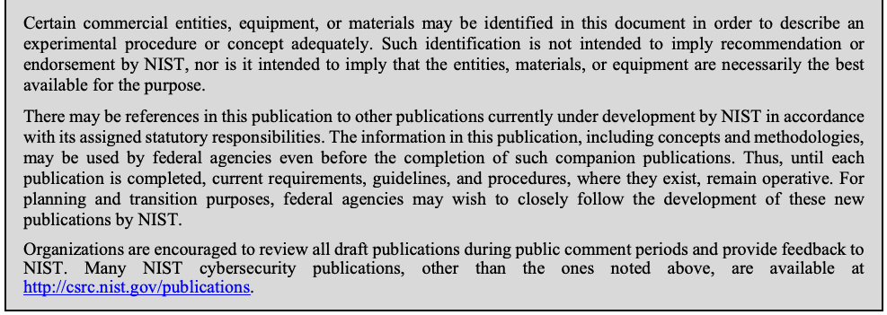

NIST Special Publication · PDF 原文抽出
User's Guide to Telework and Bring Your Own Device (BYOD) Security
テレワークおよびBYODのセキュリティガイド
NIST SP 800-114 Rev. 1（User's Guide to Telework and Bring Your Own Device (BYOD) Security）の英文と日本語訳を段落ごとに並べた閲覧用ページです。テレワークに利用する個人所有デバイス（BYOD）と、企業ネットワークに直接接続する端末を保護するための推奨事項を示します。 翻訳は有志による非公式のもので、NIST および米国商務省が作成・承認・推奨したものではありません。要件の確認にはNIST の正式版 PDFを参照してください。
NIST Special Publication 800-114 Revision 1
NIST特別刊行物800-114 改訂第1版
User’s Guide to Telework and Bring Your Own Device (BYOD) Security
テレワークおよび個人所有デバイス（BYOD）のセキュリティに関するユーザーガイド
Murugiah Souppaya Karen Scarfone
Murugiah Souppaya Karen Scarfone
This publication is available free of charge from: http://dx.doi.org/10.6028/NIST.SP.800-114r1
この刊行物は以下から無料で入手できます: http://dx.doi.org/10.6028/NIST.SP.800-114r1
C O M P U T E R S E C U R I T Y
コンピュータセキュリティ
［NIST のロゴ。公的な標章のため、この非公式サイトには掲載していない。原本 PDF を参照。］
NIST Special Publication 800-114 Revision 1
NIST特別刊行物800-114 改訂第1版
User’s Guide to Telework and Bring Your Own Device (BYOD) Security
テレワークおよび個人所有デバイス（BYOD）のセキュリティに関するユーザーガイド
Murugiah Souppaya, Computer Security Division, Information Technology Laboratory
Murugiah Souppaya、情報技術研究所コンピュータセキュリティ部門
Karen Scarfone, Scarfone Cybersecurity, Clifton, VA
Karen Scarfone、Scarfone Cybersecurity、バージニア州クリフトン
This publication is available free of charge from: http://dx.doi.org/10.6028/NIST.SP.800-114r1
この刊行物は以下から無料で入手できます: http://dx.doi.org/10.6028/NIST.SP.800-114r1
July 2016
2016年7月
U.S. Department of Commerce Penny Pritzker, Secretary
米国商務省 長官 Penny Pritzker
National Institute of Standards and Technology Willie May, Under Secretary of Commerce for Standards and Technology and Director
米国国立標準技術研究所 Willie May、商務省標準技術担当次官兼所長
Authority
権限
This publication has been developed by NIST in accordance with its statutory responsibilities under the Federal Information Security Modernization Act (FISMA) of 2014, 44 U.S.C. § 3541 et seq., Public Law (P.L.) 113-283. NIST is responsible for developing information security standards and guidelines, including minimum requirements for federal information systems, but such standards and guidelines shall not apply to national security systems without the express approval of appropriate federal officials exercising policy authority over such systems. This guideline is consistent with the requirements of the Office of Management and Budget (OMB) Circular A-130.
本刊行物は、2014年連邦情報セキュリティ近代化法（Federal Information Security Modernization Act of 2014、FISMA）、合衆国法典第44編第3541条以下（44 U.S.C. § 3541 et seq.）、公法（P.L.）113-283に基づく法定責務に従って、NISTが作成したものである。NISTは、連邦情報システムに関する最低要件を含む情報セキュリティ標準およびガイドラインを策定する責任を負う。ただし、国家安全保障システムについては、当該システムに関する政策権限を行使する適切な連邦当局者の明示的な承認がない限り、これらの標準およびガイドラインは適用されない。本ガイドラインは、行政管理予算局（OMB）通達A-130の要件に適合している。
Nothing in this publication should be taken to contradict the standards and guidelines made mandatory and binding on federal agencies by the Secretary of Commerce under statutory authority. Nor should these guidelines be interpreted as altering or superseding the existing authorities of the Secretary of Commerce, Director of the OMB, or any other federal official. This publication may be used by nongovernmental organizations on a voluntary basis and is not subject to copyright in the United States. Attribution would, however, be appreciated by NIST.
本刊行物のいかなる記述も、法定権限に基づき商務長官が連邦機関に義務付けた必須かつ拘束力のある標準およびガイドラインに反するものと解釈してはならない。また、これらのガイドラインは、商務長官、OMB長官、その他の連邦当局者が有する既存の権限を変更または置き換えるものと解釈してはならない。本刊行物は、政府機関以外の組織が任意に利用することができ、米国内では著作権の対象ではない。ただし、NISTへの出典表示を歓迎する。
National Institute of Standards and Technology Special Publication 800-114 Revision 1 Natl. Inst. Stand. Technol. Spec. Publ. 800-114rev1, 44 pages (July 2016) CODEN: NSPUE2
米国国立標準技術研究所 特別刊行物 800-114 改訂第1版 Natl. Inst. Stand. Technol. Spec. Publ. 800-114rev1、44ページ（2016年7月） CODEN: NSPUE2
This publication is available free of charge from: http://dx.doi.org/10.6028/NIST.SP.800-114r1
この刊行物は以下から無料で入手できます: http://dx.doi.org/10.6028/NIST.SP.800-114r1
Certain commercial entities, equipment, or materials may be identified in this document in order to describe an experimental procedure or concept adequately. Such identification is not intended to imply recommendation or endorsement by NIST, nor is it intended to imply that the entities, materials, or equipment are necessarily the best available for the purpose.
原本PDFの抜粋画像

実験手順または概念を十分に説明する目的で、本書では特定の商業団体、機器または材料を挙げる場合がある。このような記載は、NISTによる推奨または保証を意味するものではなく、また、当該団体、材料または機器がその目的に利用できる最良のものであることを意味するものでもない。
There may be references in this publication to other publications currently under development by NIST in accordance with its assigned statutory responsibilities. The information in this publication, including concepts and methodologies, may be used by federal agencies even before the completion of such companion publications. Thus, until each publication is completed, current requirements, guidelines, and procedures, where they exist, remain operative. For planning and transition purposes, federal agencies may wish to closely follow the development of these new publications by NIST.
本刊行物では、割り当てられた法定責務に従ってNISTが現在策定中の他の刊行物を参照する場合がある。本刊行物に含まれる情報（概念および方法論を含む）は、関連する刊行物が完成する前であっても、連邦機関が利用できる。したがって、各刊行物が完成するまでは、現行の要件、ガイドラインおよび手順は、それらが存在する場合、引き続き有効である。計画および移行のため、連邦機関はNISTによるこれらの新しい刊行物の策定状況を注意深く追跡すべきである。
Organizations are encouraged to review all draft publications during public comment periods and provide feedback to NIST. Many NIST cybersecurity publications, other than the ones noted above, are available at http://csrc.nist.gov/publications.
各組織には、パブリックコメント期間中にすべての草案を確認し、NISTに意見を提出することを推奨する。上記で言及したものを除き、多くのNISTサイバーセキュリティ刊行物は http://csrc.nist.gov/publications から入手できる。
Comments on this publication may be submitted to:
本刊行物に対するコメントは、次の宛先に提出できる。
National Institute of Standards and Technology Attn: Computer Security Division, Information Technology Laboratory 100 Bureau Drive (Mail Stop 8930) Gaithersburg, MD 20899-8930
米国国立標準技術研究所 宛先：情報技術研究所コンピュータセキュリティ部門 100 Bureau Drive (Mail Stop 8930) Gaithersburg, MD 20899-8930
All comments are subject to release under the Freedom of Information Act (FOIA).
すべてのコメントは、情報公開法（FOIA）に基づく公開の対象となる。
Reports on Computer Systems Technology
コンピュータシステム技術に関する報告書
The Information Technology Laboratory (ITL) at the National Institute of Standards and Technology (NIST) promotes the U.S. economy and public welfare by providing technical leadership for the Nation’s measurement and standards infrastructure. ITL develops tests, test methods, reference data, proof of concept implementations, and technical analyses to advance the development and productive use of information technology. ITL’s responsibilities include the development of management, administrative, technical, and physical standards and guidelines for the cost-effective security and privacy of other than national security-related information in federal information systems. The Special Publication 800-series reports on ITL’s research, guidelines, and outreach efforts in information system security, and its collaborative activities with industry, government, and academic organizations.
米国国立標準技術研究所（NIST）の情報技術研究所（ITL）は、国の計測・標準インフラストラクチャに対する技術的リーダーシップを発揮することにより、米国経済と公共の福祉を促進している。ITLは、情報技術の発展と生産的な利用を推進するため、テスト、テスト手法、参照データ、概念実証の実装、技術分析を開発している。ITLの責任には、連邦情報システムにおける国家安全保障関連以外の情報について、費用対効果の高いセキュリティとプライバシーを実現するための、管理面、運用面、技術面、物理面の標準およびガイドラインの策定が含まれる。Special Publication 800シリーズは、情報システムセキュリティに関するITLの研究、ガイドライン、アウトリーチ活動、ならびに産業界、政府、学術機関との共同活動を報告するものである。
Abstract
概要
Many people telework, and they use a variety of devices, such as desktop and laptop computers, smartphones, and tablets, to read and send email, access websites, review and edit documents, and perform many other tasks. Each telework device is controlled by the organization, a third party (such as the organization’s contractors, business partners, and vendors), or the teleworker; the latter is known as bring your own device (BYOD). This publication provides recommendations for securing BYOD devices used for telework and remote access, as well as those directly attached to the enterprise’s own networks.
多くの人がテレワークを行っており、デスクトップコンピュータ、ノートパソコン、スマートフォン、タブレットなどのさまざまなデバイスを使って、電子メールの閲覧・送信、ウェブサイトへのアクセス、文書の確認・編集、その他多くの作業を行っている。各テレワークデバイスは、組織、第三者（組織の請負業者、ビジネスパートナー、ベンダーなど）、またはテレワーカーのいずれかによって管理される。最後の場合は、個人所有デバイスの持ち込み（BYOD）と呼ばれる。本刊行物は、テレワークやリモートアクセスに使用されるBYODデバイス、および企業自らのネットワークに直接接続されるBYODデバイスを保護するための推奨事項を示す。
Keywords
キーワード
bring your own device (BYOD); host security; information security; network security; remote access; telework
個人所有デバイスの持ち込み（BYOD）、ホストセキュリティ、情報セキュリティ、ネットワークセキュリティ、リモートアクセス、テレワーク
Acknowledgments
謝辞
The authors, Murugiah Souppaya of the National Institute of Standards and Technology (NIST) and Karen Scarfone of Scarfone Cybersecurity, wish to thank their colleagues who reviewed drafts of this document and contributed to its technical content.
著者である、米国国立標準技術研究所（NIST）のMurugiah SouppayaおよびScarfone CybersecurityのKaren Scarfoneは、本書の草稿をレビューし、技術的内容に貢献した同僚に感謝する。
The authors would also like to acknowledge the individuals who contributed to the original version of the publication, including Tim Grance, Rick Kuhn, Elaine Barker, John Connor, Chris Enloe, and Jim St. Pierre of NIST; Derrick Dicoi and Victoria Thompson of Booz Allen Hamilton; Paul Hoffman of the VPN Consortium; Miles Tracy of Federal Reserve Information Technology; Benjamin Halpert of Lockheed Martin; and representatives of the Department of State.
また、著者は、本刊行物の初版に貢献した方々にも謝意を表する。これには、NISTのTim Grance、Rick Kuhn、Elaine Barker、John Connor、Chris Enloe、Jim St. Pierre、Booz Allen HamiltonのDerrick Dicoi、Victoria Thompson、VPN ConsortiumのPaul Hoffman、Federal Reserve Information TechnologyのMiles Tracy、Lockheed MartinのBenjamin Halpert、ならびに国務省の代表者が含まれる。
Trademark Information
商標に関する情報
All trademarks and registered trademarks belong to their respective organizations.
すべての商標および登録商標は、それぞれの組織に帰属する。
Table of Contents
目次
Executive Summary — vi
エグゼクティブサマリー...................................................................................................................vi
1. Introduction — 1
1. はじめに — 1
1.1 Purpose and Scope — 1
1.1 目的および適用範囲 — 1
1.2 Audience — 1
1.2 対象読者 — 1
1.3 Document Structure — 1
1.3 本書の構成 — 1
2. Overview of Telework Technologies — 3
2. テレワーク技術の概要 — 3
2.1 Remote Access Methods — 3
2.1 リモートアクセス方式 — 3
2.2 Telework Devices — 4
2.2 テレワークデバイス — 4
2.3 Telework Device Security Overview — 5
2.3 テレワークデバイスのセキュリティ概要 — 5
3. Securing Information — 7
3. 情報の保護 — 7
4. Securing Home Networks and Using Other Networks — 9
4. ホームネットワークの保護と他のネットワークの利用 — 9
4.1 Wired Home Networks — 9
4.1 有線ホームネットワーク — 9
4.2 Wireless Home Networks — 10
4.2 無線ホームネットワーク — 10
4.3 External Networks — 12
4.3 外部ネットワーク — 12
4.4 Organization Networks — 12
4.4 組織ネットワーク — 12
5. Securing BYOD Telework PCs — 13
5. BYODテレワークPCの保護 — 13
5.1 Software Updates — 13
5.1 ソフトウェアの更新 — 13
5.2 User Accounts and Sessions — 13
5.2 ユーザーアカウントとセッション — 13
5.2.1 Use Accounts with Limited Privileges — 14
5.2.1 制限付き権限のアカウントを使用する — 14
5.2.2 Protect Accounts with Passwords — 14
5.2.2 パスワードでアカウントを保護する — 14
5.2.3 Protect User Sessions from Unauthorized Physical Access — 15
5.2.3 不正な物理的アクセスからユーザーセッションを保護する — 15
5.3 Networking Configuration — 15
5.3 ネットワークの構成 — 15
5.3.1 Disable Unneeded Networking Features — 15
5.3.1 不要なネットワーク機能を無効化する — 15
5.3.2 Limit the Use of Remote Access Utilities — 16
5.3.2 リモートアクセスユーティリティの使用を制限する — 16
5.3.3 Configure Wireless Networking — 16
5.3.3 無線ネットワークを構成する — 16
5.4 Attack Prevention — 16
5.4 攻撃の防止 — 16
5.4.1 Install and Configure Antivirus Software — 17
5.4.1 ウイルス対策ソフトウェアをインストールして構成する — 17
5.4.2 Use Personal Firewalls — 17
5.4.2 パーソナルファイアウォールを使用する — 17
5.4.3 Enable and Configure Content Filtering Software — 18
5.4.3 コンテンツフィルタリングソフトウェアを有効化して構成する — 18
5.5 Primary Application Configuration — 19
5.5 主要アプリケーションの構成 — 19
5.5.1 Web Browsers — 20
5.5.1 ウェブブラウザー — 20
5.5.2 Email Clients — 21
5.5.2 メールクライアント — 21
5.5.3 Instant Messaging Clients — 22
5.5.3 インスタントメッセージングクライアント — 22
5.5.4 Office Productivity Suites — 22
5.5.4 オフィス生産性ソフトウェアスイート — 22
5.6 Remote Access Software Configuration — 22
5.6 リモートアクセスソフトウェアの構成 — 22
5.7 Security Maintenance and Monitoring — 23
5.7 セキュリティの保守と監視 — 23
6. Securing BYOD Telework Mobile Devices — 25
6. BYODテレワーク用モバイルデバイスの保護 — 25
7. Considering the Security of Third-Party Devices — 27
7. サードパーティ製デバイスのセキュリティを考慮する — 27
List of Appendices
付録一覧
Appendix A— Additional Security Considerations for Telework — 28
付録A— テレワークに関する追加のセキュリティ考慮事項 — 28
A.1 Phone Services — 28
A.1 電話サービス — 28
A.2 WPAN Technologies — 28
A.2 WPAN技術 — 28
A.3 Wireless Broadband Data Network Technologies — 29
A.3 無線ブロードバンドデータネットワーク技術 — 29
A.4 Information Destruction — 29
A.4 情報の破棄 — 29
Appendix B— Glossary — 31
付録B— 用語集 — 31
Appendix C— Acronyms and Abbreviations — 33
付録C— 頭字語および略語 — 33
Appendix D— Resources — 34
付録D— 参考情報 — 34
Executive Summary
エグゼクティブサマリー
Many people telework (also known as telecommuting), which is the ability for an organization’s employees, contractors, business partners, vendors, and/or other users to perform work from locations other than the organization’s facilities. Teleworkers use various devices, such as desktop and laptop computers, smartphones, and tablets, to read and send email, access websites, review and edit documents, and perform many other tasks. Most teleworkers use remote access, which is the ability of an organization’s users to access its non-public computing resources from locations other than the organization’s facilities. Organizations have many options for providing remote access, including virtual private networks, remote system control, and individual application access (e.g., webmail).
多くの人がテレワーク（telecommutingとも呼ばれる）を行っている。テレワークとは、組織の従業員、請負業者、ビジネスパートナー、ベンダー、またはその他のユーザーが、組織の施設以外の場所で業務を行えることを指す。テレワーカーは、デスクトップコンピュータやノートパソコン、スマートフォン、タブレットなど、さまざまなデバイスを使って、電子メールの閲覧や送信、ウェブサイトへのアクセス、文書の確認や編集など、多くの作業を行う。多くのテレワーカーはリモートアクセスを利用する。これは、組織のユーザーが組織の施設以外の場所から、公開されていない組織のコンピューティング資源にアクセスできることを指す。組織がリモートアクセスを提供する方法には、仮想プライベートネットワーク、リモートシステム制御、個別アプリケーションへのアクセス（ウェブメールなど）がある。
Telework devices can be divided into two categories: personal computers (desktops, laptops) and mobile devices (e.g., smartphones, tablets). Each telework device is controlled by the organization, the teleworker, or a third party the teleworker is affiliated with (a contractor, business partner, or vendor for the organization). Telework devices controlled by the user are also known as bring your own device (BYOD). This publication provides recommendations for securing BYOD devices used for telework and remote access, as well as those directly attached to the enterprise’s own networks. Many organizations limit the types of BYOD devices that can be used and which resources they can use, such as permitting BYOD laptops to access a limited set of resources and permitting all other BYOD devices to access webmail only. This allows organizations to limit the risk they incur from BYOD devices. When a telework device uses remote access, it is essentially a logical extension of the organization’s own network. Therefore, if the telework device is not secured properly, it poses additional risk to not only the information that the teleworker accesses but also the organization’s other systems and networks. For example, a telework device infected with a worm could spread the worm through remote access to the organization’s internal computers. Therefore, telework devices should be secured properly and have their security maintained regularly.
テレワークデバイスは、パーソナルコンピュータ（デスクトップ、ノートパソコン）とモバイルデバイス（スマートフォン、タブレットなど）の2種類に分類できる。各テレワークデバイスは、組織、テレワーカー、またはテレワーカーが所属する第三者（組織の請負業者、ビジネスパートナー、またはベンダー）のいずれかによって管理される。ユーザーが管理するテレワークデバイスは、個人所有デバイスの持ち込み（BYOD）とも呼ばれる。本刊行物は、テレワークやリモートアクセスに使用されるBYODデバイス、および企業自らのネットワークに直接接続されるBYODデバイスを保護するための推奨事項を示す。多くの組織は、使用できるBYODデバイスの種類と、それらが利用できる資源を制限している。たとえば、BYODノートパソコンには限られた範囲の資源へのアクセスを許可し、それ以外のすべてのBYODデバイスにはウェブメールへのアクセスのみを許可する。これにより、組織はBYODデバイスによって負うリスクを抑えることができる。テレワークデバイスがリモートアクセスを使用する場合、そのデバイスは実質的に組織自身のネットワークの論理的な延長となる。そのため、テレワークデバイスが適切に保護されていないと、テレワーカーがアクセスする情報だけでなく、組織の他のシステムやネットワークにも追加のリスクをもたらす。たとえば、ワームに感染したテレワークデバイスは、リモートアクセスを通じて組織内部のコンピュータにワームを拡散させる可能性がある。したがって、テレワークデバイスは適切に保護し、そのセキュリティを定期的に維持すべきである。
Before implementing any of the recommendations or suggestions in this guide, users should back up all data and verify the validity of the backups. Readers with little or no experience configuring personal computers, mobile devices, or home networks should seek assistance in applying the recommendations. Every telework device’s existing configuration and environment is unique, so changing its configuration could have unforeseen consequences, including loss of data and loss of device or application functionality.
本ガイドの推奨事項や提案を実施する前に、ユーザーはすべてのデータをバックアップし、そのバックアップが有効であることを確認すべきである。パーソナルコンピュータ、モバイルデバイス、またはホームネットワークの設定経験がほとんどない、あるいはまったくない読者は、推奨事項の適用にあたって支援を求めるべきである。テレワークデバイスごとに既存の構成と環境は異なるため、構成を変更すると、データの損失やデバイスまたはアプリケーションの機能喪失など、予期しない結果が生じる可能性がある。
Implementing the following recommendations should help teleworkers improve the security of their telework devices. Some of the recommendations may be challenging for many users to implement, so users who are unsure of how to implement these recommendations should seek expert assistance.
以下の推奨事項を実施することは、テレワーカーがテレワークデバイスのセキュリティを向上させるのに役立つはずである。推奨事項の中には多くのユーザーにとって実施が難しいものもあるため、これらの推奨事項の実施方法が分からないユーザーは、専門家の支援を求めるべきである。
Before teleworking, users should understand not only their organization’s policies and requirements, but also appropriate ways of protecting the organization’s information that they may access.
テレワークを始める前に、ユーザーは組織のポリシーと要件だけでなく、アクセスする可能性のある組織の情報を適切に保護する方法も理解しておくべきである。
Sensitive information that is stored on or sent to or from telework devices needs to be protected so that malicious parties can neither access nor alter information. An unauthorized release of sensitive information could damage the public’s trust in an organization, jeopardize the mission of an organization, or harm individuals if their personal information has been released. Understanding how to protect such information accessed during teleworking can be confusing because there are many ways in which information can be protected. Examples include protecting the physical security of telework devices, encrypting files stored on devices, and ensuring that information stored on devices is backed up.
テレワークデバイスに保存される機微情報、またはテレワークデバイスとの間で送受信される機微情報は、悪意のある者が情報にアクセスすることも改ざんすることもできないように保護する必要がある。機微情報が許可なく公開されると、組織に対する社会の信頼を損なったり、組織の使命を危うくしたり、個人情報が公開された場合には個人に被害を与えたりするおそれがある。テレワーク中にアクセスするそのような情報の保護方法を理解することは、情報を保護する方法が数多くあるため、分かりにくい場合がある。例としては、テレワークデバイスの物理的セキュリティを保護すること、デバイスに保存されたファイルを暗号化すること、デバイスに保存された情報が確実にバックアップされるようにすることが挙げられる。
Teleworkers should ensure that all the devices on their wired and wireless home networks are properly secured, as well as the home networks themselves.
テレワーカーは、有線および無線のホームネットワーク上のすべてのデバイスと、ホームネットワーク自体が、適切に保護されているようにすべきである。
An important part of telework and remote access security is applying security measures to the personal computers (PCs) and mobile devices using the same wired and wireless home networks to which the telework device normally connects. If any of these other devices become infected with malware or are otherwise compromised, they could attack the telework device or eavesdrop on its communications. Teleworkers should also be cautious about allowing others to place devices on the teleworkers’ home networks, in case one of these devices is compromised.
テレワークおよびリモートアクセスのセキュリティでは、テレワークデバイスが通常接続する有線・無線ホームネットワークを共有するパーソナルコンピュータ（PC）やモバイルデバイスにもセキュリティ対策を講じることが重要である。これらの他のデバイスがマルウェアに感染したり、その他の方法で侵害されたりすると、テレワークデバイスを攻撃したり、その通信を盗聴したりする可能性がある。また、テレワーカーは、自宅のネットワークに他者のデバイスを接続させる際にも注意すべきである。そのデバイスが侵害されている可能性があるためである。
Teleworkers should apply security measures to the home networks to which their telework devices normally connect. One example of a security measure is using a broadband router or firewall appliance to prevent computers outside the home network from initiating communications with telework devices on the home network. Another example is ensuring that sensitive information transmitted over a wireless home network is adequately protected through strong encryption.
テレワーカーは、テレワークデバイスが通常接続するホームネットワークにセキュリティ対策を適用すべきである。セキュリティ対策の一例は、ブロードバンドルーターまたはファイアウォールアプライアンスを使用して、ホームネットワーク外部のコンピュータがホームネットワーク上のテレワークデバイスとの通信を開始できないようにすることである。別の例は、無線ホームネットワーク上で送信される機微情報が、強力な暗号化によって十分に保護されるようにすることである。
Teleworkers who use a BYOD desktop or laptop (PC) for telework should secure its operating system and primary applications.
BYODのデスクトップまたはノートパソコン（PC）をテレワークに使用する人は、そのオペレーティングシステムと主要なアプリケーションを保護すべきである。
Securing a BYOD PC includes the following actions:
BYOD PCの保護には、次の対策が含まれる。
•Using a combination of security software, such as antivirus software, personal firewalls, spam and web content filtering, and popup blocking, to stop most attacks, particularly malware;
•ウイルス対策ソフトウェア、パーソナルファイアウォール、スパムおよびウェブコンテンツのフィルタリング、ポップアップブロックなどのセキュリティソフトウェアを組み合わせて使用し、特にマルウェアを含むほとんどの攻撃を阻止すること;
•Restricting who can use the PC by having a separate standard user account for each person, assigning a password to each user account, using the standard user accounts for daily use, and protecting user sessions from unauthorized physical access;
•PCを使用できる人を制限するため、各人に個別の標準ユーザーアカウントを用意し、各ユーザーアカウントにパスワードを設定し、日常使用には標準ユーザーアカウントを使い、ユーザーセッションを不正な物理的アクセスから保護すること;
•Ensuring that updates are regularly applied to the operating system and primary applications, such as web browsers, email clients, instant messaging clients, and security software;
•オペレーティングシステムと、ウェブブラウザー、メールクライアント、インスタントメッセージングクライアント、セキュリティソフトウェアなどの主要アプリケーションに、定期的に更新を適用すること;
•Disabling unneeded networking features on the PC and configuring wireless networking securely;
•PC上の不要なネットワーク機能を無効にし、無線ネットワークを安全に構成すること;
•Configuring primary applications to filter content and stop other activity that is likely to be malicious;
•主要アプリケーションを構成し、コンテンツをフィルタリングして、悪意のある可能性が高いその他の活動を阻止すること;
•Installing and using only known and trusted software;
•既知で信頼できるソフトウェアのみをインストールして使用すること;
•Configuring remote access software based on the organization’s requirements and recommendations; and
•組織の要件および推奨事項に基づいて、リモートアクセスソフトウェアを構成すること; および
•Maintaining the PC’s security on an ongoing basis, such as changing passwords regularly and checking the status of security software periodically.
•パスワードを定期的に変更し、セキュリティソフトウェアの状態を定期的に確認するなどして、PCのセキュリティを継続的に維持すること。
Teleworkers who use a BYOD mobile device for telework should secure it based on the security recommendations from the device’s manufacturer.
BYODモバイルデバイスをテレワークに使用するテレワーカーは、そのデバイスのメーカーによるセキュリティ推奨事項に基づいてデバイスを保護すべきである。
A wide variety of mobile devices exists, and security features available for these devices also vary widely. Some devices offer only a few basic features, whereas others offer sophisticated features similar to those offered by PCs. This does not necessarily imply that more security features are better; in fact, many devices offer more security features because the capabilities they provide (e.g., wireless networking, instant messaging) make them more susceptible to attack than devices without these capabilities. General recommendations for securing BYOD mobile devices are as follows:
モバイルデバイスには多種多様なものがあり、これらのデバイスで利用できるセキュリティ機能も大きく異なる。基本的な機能を少数しか備えていないデバイスもあれば、PCが備えるものと同様の高度な機能を備えたデバイスもある。これは、セキュリティ機能が多いほどよいことを必ずしも意味しない。実際には、多くのデバイスは、提供する機能（無線ネットワーク、インスタントメッセージングなど）によって、それらの機能を持たないデバイスよりも攻撃を受けやすくなるために、より多くのセキュリティ機能を備えている。BYODモバイルデバイスを保護するための一般的な推奨事項は次のとおりである。
•Limit access to the device, such as setting a unique personal identification number (PIN) or password not used elsewhere, and automatically locking a device after an idle period;
•固有の個人識別番号（PIN）または他では使用していないパスワードを設定するなどしてデバイスへのアクセスを制限し、一定時間操作がない場合にデバイスを自動的にロックすること;
•Disable networking capabilities, such as Bluetooth and Near Field Communication (NFC), except when they are needed;
•必要な場合を除き、Bluetoothや近距離無線通信（NFC）などのネットワーク機能を無効にすること;
•Ensure that security updates, if available, are acquired and installed at least weekly, preferably daily;
•セキュリティ更新が提供されている場合は、少なくとも週1回、望ましくは毎日、入手してインストールすること;
•Configure applications to support security (e.g., blocking activity that is likely to be malicious);
•悪意のある可能性が高い活動をブロックするなど、セキュリティを支援するようにアプリケーションを構成すること;
•Download and run apps only from authorized apps stores;
•正規のアプリストアからのみアプリをダウンロードして実行すること;
•Do not jailbreak or root the device;
•デバイスのjailbreakまたはroot化を行わないこと;
•Do not connect the device to an unknown charging station; and
•不明な充電ステーションにデバイスを接続しないこと; および
•Use an isolated, protected, and encrypted environment that is supported and managed by the organization to access the organization’s data and services.
•組織のデータおよびサービスにアクセスする際は、組織がサポートし管理する、分離され、保護され、暗号化された環境を使用すること。
Teleworkers should avoid using any client device for telework that is not controlled by the organization, the teleworker, or the teleworker’s affiliated organization (contractor, business partner, vendor, etc.)
テレワーカーは、組織、テレワーカー自身、またはテレワーカーが所属する組織（請負業者、ビジネスパートナー、ベンダーなど）が管理していないクライアントデバイスを、テレワークに使用することを避けるべきである。
Teleworkers often want to perform remote access from unknown devices, such as checking email from a kiosk computer at a hotel or from a friend’s mobile phone. However, teleworkers typically do not know if such devices have been secured properly or if they have been compromised. Consequently, a teleworker could use a device infected with malware that steals their information (e.g., passwords, email messages, and other sensitive data). Many organizations either prohibit unknown devices from being used for remote access or permit use only by having the teleworker first restart the PC with special removable media inserted so that the PC will reboot into a secure environment for telework purposes.
テレワーカーは、ホテルのキオスクコンピュータや友人の携帯電話から電子メールを確認するなど、未知のデバイスからリモートアクセスを行いたいと考えることが多い。しかし、テレワーカーは通常、そのようなデバイスが適切に保護されているかどうか、あるいは侵害されているかどうかを知らない。その結果、テレワーカーは、自分の情報（パスワード、電子メールメッセージ、その他の機微データなど）を盗むマルウェアに感染したデバイスを使用してしまう可能性がある。多くの組織は、未知のデバイスをリモートアクセスに使用することを禁止するか、または、テレワーカーがまず特別なリムーバブルメディアを挿入した状態でPCを再起動し、PCがテレワーク用の安全な環境で起動するようにする場合に限って使用を許可している。
1. Introduction
1. はじめに
1.1 Purpose and Scope
1.1 目的および適用範囲
This publication helps teleworkers secure the networks and bring your own device (BYOD) devices they use for telework, such as personally owned desktop and laptop computers and mobile devices (e.g., smartphones, tablets). The document focuses specifically on security for telework involving remote access to organizations’ non-public computing resources. It provides practical, real-world recommendations for securing telework computers’ operating systems (OS) and applications, as well as home networks that the computers use. It presents basic recommendations for securing mobile devices used for telework. The document also presents advice on protecting the information stored on telework computers and removable media.
本刊行物は、テレワーカーがテレワークに使用するネットワークとBYODデバイス（個人所有のデスクトップコンピュータ、ノートパソコン、スマートフォン、タブレットなど）の保護を支援する。本書は特に、組織の非公開コンピューティング資源へのリモートアクセスを伴うテレワークのセキュリティに焦点を当てている。テレワーク用コンピュータのオペレーティングシステム（OS）やアプリケーション、およびそれらのコンピュータが使用するホームネットワークを保護するための、実用的で現実の状況に即した推奨事項を示す。また、テレワークに使用するモバイルデバイスの保護に関する基本的な推奨事項を示す。さらに、テレワーク用コンピュータやリムーバブルメディアに保存されている情報を保護するための助言も示す。
1.2 Audience
1.2 対象読者
This document has been created primarily for teleworkers who are responsible for securing the networks and BYOD devices that they use for telework. The document also should be helpful to information security personnel and others who may need to assist teleworkers with their devices and remote access use.
本書は主に、テレワークに使用するネットワークおよびBYODデバイスの保護に責任を負うテレワーカーを対象に作成されている。また、テレワーカーのデバイスやリモートアクセスの利用を支援する必要が生じ得る情報セキュリティ担当者その他の者にも役立つはずである。
1.3 Document Structure
1.3 本書の構成
This document is intended to be used by readers with various levels of experience and security knowledge, who are faced with different situations in securing their BYOD devices. For example, one reader might be securing a home network and a laptop, while another reader wants to secure a smartphone. Not all sections of this guide will apply to every situation.
本書は、経験やセキュリティ知識の水準がさまざまであり、BYODデバイスの保護にあたって異なる状況に直面している読者が利用することを想定している。たとえば、ホームネットワークとノートPCを保護しようとしている読者もいれば、スマートフォンを保護したい読者もいる。本ガイドのすべての節が、あらゆる状況に当てはまるわけではない。
The remainder of this document is organized into five major sections:
本書の残りの部分は、次の5つの主要な節で構成されている。
•Section 2 provides an overview of telework and remote access and an introduction to security concerns regarding telework devices.
•第2節では、テレワークとリモートアクセスの概要を示し、テレワークデバイスに関するセキュリティ上の懸念事項を紹介する。
•Section 3 provides guidelines on securing information stored on or sent to or from telework devices.
•第3節では、テレワークデバイスに保存されている情報、またはデバイスとの間で送受信される情報を保護するためのガイドラインを示す。
•Section 4 presents recommendations for securing wired and wireless home networks used for telework.
•第4節では、テレワークに使用する有線および無線ホームネットワークを保護するための推奨事項を示す。
•Section 5 discusses securing BYOD personal computers (PC) through methods such as applying software updates and installing and configuring antivirus software and personal firewalls.
•第5節では、ソフトウェア更新の適用、ウイルス対策ソフトウェアやパーソナルファイアウォールのインストールおよび構成などの方法による、BYODパーソナルコンピュータ（PC）の保護について説明する。
•Section 6 gives an overview of securing BYOD mobile devices.
•第6節では、BYODモバイルデバイスの保護について概説する。
•Section 7 describes the security considerations for third-party devices.
•第7節では、サードパーティ製デバイスに関するセキュリティ上の考慮事項を説明する。
The document also contains several appendices with supporting material:
本書には、補足資料を収めたいくつかの付録も含まれている。
•Appendix A presents additional security-related considerations for telework, such as using phone services (e.g., cellular phones, Voice over Internet Protocol [VoIP] services), using wireless personal area network (WPAN) technologies such as Bluetooth, using wireless broadband data cards, and ensuring the secure destruction of removable media and printed materials that might contain sensitive information.
•付録Aでは、携帯電話やボイスオーバーインターネットプロトコル（VoIP）サービスなどの電話サービスの利用、Bluetoothなどの無線パーソナルエリアネットワーク（WPAN）技術の利用、無線ブロードバンドデータカードの利用、ならびに機微情報を含む可能性のあるリムーバブルメディアや印刷物を安全に廃棄することなど、テレワークに関する追加のセキュリティ上の考慮事項を示す。
•Appendix B contains a glossary.
•付録Bには用語集がある。
•Appendix C contains a list of acronyms and abbreviations.
•付録Cには頭字語と略語の一覧がある。
•Appendix D lists print resources and online tools and resources that may be helpful references for securing BYOD devices.
•付録Dには、BYODデバイスの保護に役立つ参考資料として、紙媒体の資料、オンラインツールおよびリソースを掲載している。
2. Overview of Telework Technologies
2. テレワーク技術の概要
Many people telework (also known as telecommuting), which is the ability for an organization’s employees, contractors, business partners, vendors, and/or other users to perform work from locations other than the organization’s facilities. Teleworkers use various devices, such as desktop and laptop computers, smartphones, and tablets, to read and send email, access websites, review and edit documents, and perform many other tasks. Most teleworkers use remote access, which is the ability for an organization’s users to access its non-public computing resources from locations other than the organization’s facilities.
多くの人がテレワーク（テレコミューティングとも呼ばれる）を行っている。テレワークとは、組織の従業員、請負業者、ビジネスパートナー、ベンダー、および／またはその他のユーザーが、組織の施設以外の場所から業務を行える能力をいう。テレワーカーは、デスクトップコンピュータやノートPC、スマートフォン、タブレットなどのさまざまなデバイスを使って、電子メールの閲覧と送信、ウェブサイトへのアクセス、文書の確認と編集、その他多くの作業を行う。ほとんどのテレワーカーはリモートアクセスを利用する。リモートアクセスとは、組織のユーザーが、組織の施設以外の場所から、その組織の非公開のコンピューティング資源にアクセスできる能力をいう。
This section of the publication provides an overview of telework technologies. It discusses commonly used remote access methods and talks about the need to secure telework devices, such as laptops and smartphones.
この節では、テレワーク技術の概要を示す。一般的なリモートアクセス方式を説明し、ノートパソコンやスマートフォンなどのテレワークデバイスを保護する必要性について述べる。
2.1 Remote Access Methods
2.1 リモートアクセス方式
Organizations have many options for providing remote access to their computing resources. The options most commonly used for teleworkers are as follows:
組織には、自らのコンピューティング資源へのリモートアクセスを提供するための選択肢が多数ある。テレワーカー向けに最も一般的に用いられる選択肢は、次のとおりである。
•Virtual private network (VPN). A VPN is a secure “tunnel” that connects the teleworker’s device to the organization’s network. Once the tunnel has been established, the teleworker can access many of the organization’s computing resources through the tunnel. The types of VPNs most commonly used for teleworking are as follows:
•仮想プライベートネットワーク（VPN）。VPNは、テレワーカーのデバイスを組織のネットワークに接続する安全な「トンネル」である。トンネルが確立されると、テレワーカーはそのトンネルを通じて組織の多くのコンピューティング資源にアクセスできる。テレワークで最も一般的に使用されるVPNの種類は次のとおりである。
•Internet Protocol Security (IPsec) VPN. An IPsec VPN can give teleworkers access to many different types of resources, such as applications, file servers, and printers. Using an IPsec VPN requires IPsec client software to be installed and configured on each telework device. Various applications, such as a word processor for viewing and editing documents, also may need to be installed. Because of the software installation and configuration needs, IPsec VPNs are most often accessed from computers issued and controlled by the organization. Some organizations permit teleworkers to install IPsec VPN clients on their own PCs and mobile devices. The client software is often preconfigured by the organization and provided to the teleworkers; otherwise, teleworkers can configure IPsec VPN clients built into their devices or acquire, install, and configure third-party clients.
•インターネットプロトコルセキュリティ（IPsec）VPN。IPsec VPNを使用すると、テレワーカーはアプリケーション、ファイルサーバー、プリンターなど、多様な種類の資源にアクセスできる。IPsec VPNを使用するには、各テレワークデバイスにIPsecクライアントソフトウェアをインストールして構成する必要がある。文書の表示や編集に使うワープロなど、さまざまなアプリケーションのインストールも必要になる場合がある。ソフトウェアのインストールと構成が必要なため、IPsec VPNは、組織が支給し管理するコンピュータから利用されることが最も一般的である。組織によっては、テレワーカーが所有するPCやモバイルデバイスへのIPsec VPNクライアントのインストールを許可している。クライアントソフトウェアは、多くの場合、組織が事前に構成してテレワーカーに提供する。そうでない場合、テレワーカーは、デバイスに組み込まれたIPsec VPNクライアントを構成するか、サードパーティ製クライアントを入手、インストール、構成できる。
•Secure Sockets Layer (SSL) VPN. Some SSL VPNs primarily provide access to web applications through standard web browsers. Other SSL VPNs are very similar to IPsec VPNs and can provide access to many types of applications; these types of VPNs typically require users to install additional software.
•セキュアソケットレイヤー（SSL）VPN。一部のSSL VPNは、主に標準的なウェブブラウザーを通じたウェブアプリケーションへのアクセスを提供する。他のSSL VPNはIPsec VPNと非常によく似ており、多様なアプリケーションへのアクセスを提供できる。この種のVPNでは通常、ユーザーが追加のソフトウェアをインストールする必要がある。
•Remote system control. Remote system control allows a teleworker to remotely use a PC at the organization from a telework device. The remote PC has the software installed that the teleworker needs to run, such as office productivity software (e.g., word processors, spreadsheet programs) and organization-specific applications. The remote system control method most commonly used for telework is terminal server access, which gives each teleworker access to a separate standard virtual desktop.1 Terminal server access requires the teleworker to either install a special client application on the telework device or use a web interface, often with a browser plug-in or other additional software that the organization provides. A similar method is known as virtual desktop infrastructure (VDI), and it delivers virtual images of operating systems to users. Yet another method that is essentially VDI for smartphones and tablets is known as virtual mobile infrastructure (VMI).
•リモートシステム制御。リモートシステム制御を使うと、テレワーカーはテレワークデバイスから組織内のPCを遠隔操作できる。そのリモートPCには、テレワーカーが実行する必要のあるソフトウェアがインストールされている。たとえば、オフィス生産性ソフトウェア（ワープロや表計算プログラムなど）や、組織固有のアプリケーションがある。テレワークで最も一般的に使われるリモートシステム制御方式はターミナルサーバーアクセスで、各テレワーカーに個別の標準仮想デスクトップを提供する。1 ターミナルサーバーアクセスでは、テレワーカーはテレワークデバイスに専用クライアントアプリケーションをインストールするか、ウェブインターフェースを使用する必要がある。ウェブインターフェースには、多くの場合、ブラウザープラグインや組織が提供するその他の追加ソフトウェアが必要である。これに類似した方式は仮想デスクトップインフラストラクチャ（VDI）と呼ばれ、オペレーティングシステムの仮想イメージをユーザーに提供する。スマートフォンやタブレット向けにVDIを実現する方式は、仮想モバイルインフラストラクチャ（VMI）と呼ばれる。
•Individual application access. A teleworker can access an individual application remotely, usually a web application such as email access. This type of access typically requires only a web browser on the telework device, so in most cases there is no need to reconfigure the device or install software on it before accessing the applications.
•個別アプリケーションへのアクセス。テレワーカーは、通常は電子メールへのアクセスなどのウェブアプリケーションである個別のアプリケーションに、リモートからアクセスできる。この種のアクセスに必要なのは通常、テレワークデバイス上のウェブブラウザーだけである。そのため、多くの場合、アプリケーションにアクセスする前にデバイスを再構成したり、ソフトウェアをインストールしたりする必要はない。
There are many ways in which teleworkers gain access to the Internet, including broadband networks (e.g., cable modem, wireless broadband), cellular networks, wireless hotspots, and other organizations’ networks. For this publication, the access method used is typically irrelevant; any special considerations related to a particular method are highlighted.
テレワーカーがインターネットにアクセスする方法は数多くあり、ブロードバンドネットワーク（例：ケーブルモデム、無線ブロードバンド）、携帯電話ネットワーク、無線ホットスポット、他組織のネットワークなどがある。本書では、利用するアクセス方式は通常は関係がない。特定の方式に関する特別な考慮事項がある場合は、その点を明示する。
Most of the computing resources used through remote access are available only to an organization’s users. Before accessing such resources, the users need to demonstrate their identities, such as with usernames and passwords or with credentials from a Personal Identity Verification (PIV) smart card or derived PIV credentials. Many remote access solutions require teleworkers to authenticate multiple times; for example, a teleworker might need to authenticate to use a VPN, and then authenticate to individual applications accessed through the VPN. Many organizations have separate authentication systems for remote access, and it is common for teleworkers to be issued a hardware token and to have to enter a code from the token into the computer to be authenticated. Many organizations also require teleworkers to reauthenticate periodically during long remote access sessions, such as after each eight hours of a session or after 30 minutes of idle time. These authentication options help organizations confirm that the person using remote access is authorized to do so.
リモートアクセスで使用されるコンピューティング資源の多くは、組織のユーザーだけが利用できる。そのような資源にアクセスする前に、ユーザーはユーザー名とパスワード、個人識別検証（PIV）スマートカードの認証情報、または派生PIV認証情報などを用いて、自分の身元を証明する必要がある。多くのリモートアクセスソリューションでは、テレワーカーは複数回認証する必要がある。たとえば、VPNを利用するために認証した後、VPNを通じてアクセスする個々のアプリケーションに対して、改めて認証が必要になる場合がある。多くの組織はリモートアクセス用に個別の認証システムを設けている。また、ハードウェアトークンをテレワーカーに支給し、認証を受けるために、トークンに表示されるコードをコンピュータに入力させることも一般的である。多くの組織では、長時間のリモートアクセスセッション中に定期的な再認証も求めている。たとえば、セッション開始から8時間ごと、または30分間操作がなかった後に再認証させる。これらの認証方法により、組織はリモートアクセスを利用している人物がその利用を許可されていることを確認できる。
Most remote access technologies and many individual applications are able to encrypt their communications automatically. This ability prevents attackers on the Internet and other networks from eavesdropping on the communications or tampering with them. It is outside the scope of this publication to provide a detailed explanation of communications protection. Teleworkers should check with their organizations as to what protection is applied to their communications, so that they do not inadvertently transfer sensitive information over networks without adequate protection.
ほとんどのリモートアクセス技術と多くの個別アプリケーションは、通信を自動的に暗号化できる。この機能により、インターネットその他のネットワーク上の攻撃者が通信を盗聴したり改ざんしたりすることを防げる。通信の保護について詳しく説明することは、本書の対象範囲外である。テレワーカーは、十分な保護のないネットワークを通じて機微情報をうっかり転送してしまわないよう、自分の通信にどのような保護が適用されているかを組織に確認すべきである。
2.2 Telework Devices
2.2 テレワークデバイス
Telework devices can be divided into two general categories:
テレワークデバイスは、次の2つの一般的なカテゴリーに分類できる。
•Personal computers (PC), which are desktop and laptop computers. PCs run desktop/laptop operating systems such as Windows, Apple OS X, and Linux. PCs can be used for any of the remote access methods described in Section 2.1.
•パーソナルコンピュータ（PC）：デスクトップコンピュータおよびノートパソコンである。PCでは、Windows、Apple OS X、Linuxなどのデスクトップ／ノートパソコン用オペレーティングシステムが動作する。PCは第2.1節で説明したあらゆるリモートアクセス方式に使用できる。
•Mobile devices, which are small mobile computers such as smartphones and tablets. Mobile devices are most often used for remote access methods that use web browsers, primarily SSL VPNs and individual web application access.
•モバイルデバイス：スマートフォンやタブレットなどの小型モバイルコンピュータである。モバイルデバイスは、ウェブブラウザーを使用するリモートアクセス方式、主にSSL VPNや個別のウェブアプリケーションへのアクセスに利用されることが最も一般的である。
The difference between PCs and mobile devices is decreasing. Mobile devices are offering more functionality previously provided only by PCs. Still, the security controls available for PCs and mobile devices are significantly different as of this writing, so this publication provides separate recommendations for PCs and mobile devices, where applicable.
PCとモバイルデバイスの違いは小さくなりつつある。モバイルデバイスは、以前はPCだけが提供していた機能をより多く提供するようになっている。それでも、本書の執筆時点では、PCとモバイルデバイスで利用できるセキュリティ管理策は大きく異なる。そのため、本書では、該当する場合には、PCとモバイルデバイスについて別々の推奨事項を示す。
Another set of categories used in the recommendations is the party that is responsible for the security of the telework device. These categories are as follows:
推奨事項で用いるもう1組のカテゴリーは、テレワークデバイスのセキュリティに責任を負う主体によるものである。これらのカテゴリーは次のとおりである。
•Organization. Telework devices in this category are usually acquired, configured, and managed by the organization. These devices can be used for any of the organization’s remote access methods.
•組織管理。通常、このカテゴリーのテレワークデバイスは組織が調達、構成、管理する。これらのデバイスは、組織のあらゆるリモートアクセス方式に使用できる。
•Third-Party-Controlled. These telework devices are controlled by a third party, typically one that employs the teleworker on behalf of the organization (such as one of the organization’s contractors, business partners, or vendors). This third party is ultimately responsible for securing the telework devices and maintaining their security. These devices can usually be used for many or all of the organization’s remote access methods.
•第三者管理。これらのテレワークデバイスは第三者が管理する。通常、その第三者は、組織のためにテレワーカーを雇用する組織（当該組織の請負業者、ビジネスパートナー、ベンダーなど）である。この第三者が、テレワークデバイスの保護とセキュリティの維持について最終的な責任を負う。これらのデバイスは通常、組織の多くの、またはすべてのリモートアクセス方式に使用できる。
•Bring Your Own Device (BYOD). All non-organization-controlled devices managed by the teleworkers themselves are also known as bring your own device (BYOD).2 These devices can usually be used for many or all of the organization’s remote access methods.
•個人所有デバイスの持ち込み（BYOD）。テレワーカー自身が管理する、組織の管理下にないデバイスは、個人所有デバイスの持ち込み（BYOD）とも呼ばれる。2 これらのデバイスは通常、組織の多くの、またはすべてのリモートアクセス方式に使用できる。
•Unknown. Labeled as “unknown” because there are no assurances regarding their security, these telework devices are owned and controlled by other parties, such as kiosk computers at hotels, and PCs or mobile devices owned by friends and family. Remote access options for these devices are typically quite limited because users cannot or should not install the organization’s software onto them, such as VPN software, terminal server software, and web browser plug-ins. Their use is extremely risky because of the unknown nature of their security posture. Therefore, many organizations either prohibit the use of unknown devices for telework or permit use only by having the user first restart the PC with special removable media inserted so that the PC will reboot into a secure environment for telework purposes.
•不明なデバイス。セキュリティが保証されていないため「不明」と分類されるこれらのテレワークデバイスは、ホテルのキオスク端末や、友人・家族が所有するPCまたはモバイルデバイスなど、他者が所有し管理するものである。ユーザーがVPNソフトウェア、ターミナルサーバーソフトウェア、ウェブブラウザープラグインなどの組織のソフトウェアをインストールできない、またはインストールすべきでないため、これらのデバイスで利用できるリモートアクセス方式は通常かなり限られている。セキュリティ態勢が不明であるため、これらのデバイスの使用は非常に危険である。そのため、多くの組織は不明なデバイスのテレワーク利用を禁止するか、ユーザーが特別なリムーバブルメディアを挿入した状態で先にPCを再起動し、テレワーク用の安全な環境でPCを起動する場合に限って利用を認めている。
For various reasons, including security policies and technology limitations, organizations often limit which types of devices can be used for remote access. For example, an organization might permit only its own PCs and mobile devices to be used. Some organizations have tiered access levels, such as allowing organization PCs to access many resources, BYOD PCs to access a more limited set of resources, and BYOD mobile devices to access only one or two resources, such as webmail. This allows an organization to limit the risk it incurs by permitting the most-controlled devices to have the most access and the least-controlled devices to have minimal access or no access at all.
セキュリティポリシーや技術的な制約などさまざまな理由から、組織は、リモートアクセスに使用できるデバイスの種類を制限することが多い。たとえば、組織が自らのPCとモバイルデバイスだけに使用を許可する場合がある。段階的なアクセスレベルを設けている組織もある。たとえば、組織のPCには多くの資源へのアクセスを許可し、BYOD PCにはより限られた範囲の資源へのアクセスを許可し、BYODモバイルデバイスにはウェブメールなど1つか2つの資源だけへのアクセスを許可する、といったものである。こうすることで、組織は、最も管理されているデバイスに最も多くのアクセスを許可し、最も管理されていないデバイスには最小限のアクセスしか許可しないか、まったくアクセスを許可しないことによって、自らが負うリスクを抑えることができる。
Before using a BYOD device, each teleworker should check with his or her organization to confirm that the organization permits the teleworker’s BYOD devices to be used. Teleworkers should also be aware that many organizations periodically reassess their policies for telework devices and may change which types of devices are permitted, so teleworkers should ensure they review current information on remote access devices.
BYODデバイスを使用する前に、各テレワーカーは、組織が自分のBYODデバイスの使用を許可していることを確認するため、所属組織に問い合わせるべきである。また、組織はテレワークデバイスに関するポリシーを定期的に再評価し、許可するデバイスの種類を変更する場合があることをテレワーカーは認識すべきである。そのため、テレワーカーはリモートアクセスデバイスに関する最新情報を確認すべきである。
2.3 Telework Device Security Overview
2.3 テレワークデバイスのセキュリティ概要
In today’s computing environment, there are many threats to telework devices. These threats are posed by people with many different motivations, including causing mischief and disruption, and committing identity theft and other forms of fraud. Teleworkers can increase their devices’ security to provide better protection against these threats. The primary threat against most telework devices is malware. Malware, also known as malicious code, refers to a computer program that is covertly placed onto a computing device with the intent of compromising the confidentiality, integrity, or availability of the device’s data, applications, or OS. Common types of malware threats include viruses, worms, malicious mobile code, Trojan horses, rootkits, spyware, and bots.3 Malware threats can infect devices through many means, including email, websites, file downloads and file sharing, peer-to-peer software, instant messaging, and social media. Another common threat against telework devices is loss or theft of the device. Someone with physical access to a device has many options for attempting to view or copy the information stored on it.
今日のコンピューティング環境では、テレワークデバイスは多くの脅威にさらされている。こうした脅威は、いたずらや妨害、個人情報を悪用したなりすまし、その他の詐欺を行うなど、さまざまな動機を持つ人々によってもたらされる。テレワーカーは、デバイスのセキュリティを高めることで、こうした脅威からより適切に保護できる。ほとんどのテレワークデバイスに対する主な脅威はマルウェアである。マルウェア（悪意のあるコードとも呼ばれる）とは、デバイスのデータ、アプリケーション、またはオペレーティングシステム（OS）の機密性、完全性、可用性を損なう目的で、コンピューティングデバイスに密かに配置されるプログラムを指す。一般的なマルウェアには、ウイルス、ワーム、悪意のあるモバイルコード、トロイの木馬、ルートキット、スパイウェア、ボットがある。3 マルウェアは、電子メール、ウェブサイト、ファイルのダウンロードや共有、ピアツーピアソフトウェア、インスタントメッセージング、ソーシャルメディアなど、さまざまな経路からデバイスに感染する。テレワークデバイスに対するもう1つの一般的な脅威は、デバイスの紛失または盗難である。デバイスに物理的にアクセスできる者は、そこに保存された情報を閲覧またはコピーしようとするさまざまな手段を持っている。
Security protections, also known as security controls, are measures against threats that are intended to compensate for the device’s security weaknesses, also known as vulnerabilities. Threats attempt to take advantage of these vulnerabilities. Some vulnerabilities can be eliminated through security protections, such as a feature in an application that automatically downloads and installs new versions of the application that have corrected previous errors. For vulnerabilities that cannot be eliminated, security protections can prevent attacks from taking advantage of them, such as antivirus software stopping an infected email from being opened by a user, or hard drive encryption making files unreadable by others. Regardless of how many security protections are used, it is simply impossible to provide 100 percent protection against attacks because of the complexity of computing. A more realistic goal is to use security protections to give attackers as few opportunities as feasible to gain access to a device or to damage the device’s software or information.
セキュリティ保護策（セキュリティ管理策とも呼ばれる）とは、デバイスのセキュリティ上の弱点（脆弱性とも呼ばれる）を補うことを意図した、脅威に対する対策である。脅威は、これらの脆弱性につけ込もうとする。脆弱性の中には、セキュリティ保護策によって解消できるものがある。たとえば、以前の誤りを修正したアプリケーションの新しいバージョンを自動的にダウンロードしてインストールする、アプリケーションの機能がそうである。解消できない脆弱性については、セキュリティ保護策によって、攻撃がその脆弱性につけ込むのを防ぐことができる。たとえば、ウイルス対策ソフトウェアが、感染した電子メールをユーザーが開くのを阻止したり、ハードドライブの暗号化によって他者がファイルを読めないようにしたりする場合である。コンピューティングの複雑さゆえに、どれほど多くのセキュリティ保護策を用いても、攻撃に対する100パーセントの保護を提供することはまったく不可能である。より現実的な目標は、セキュリティ保護策を用いて、攻撃者がデバイスにアクセスしたり、デバイスのソフトウェアや情報に損害を与えたりする機会を、実現可能な限り少なくすることである。
For an organization, permitting teleworkers to remotely access its computing resources gives attackers additional opportunities to breach the organization’s security. When a telework device uses remote access, it is essentially an extension of the organization’s own network. The same is true when a BYOD device is directly connected to the organization’s local network. Therefore, if the telework device is not secured properly, it poses additional risk not only to the information that the teleworker accesses, but also to the organization’s other systems and networks. For example, a telework device infected with a worm could spread it through remote access to the organization’s internal computers. Therefore, telework devices should be secured properly and have their security maintained regularly.
組織にとって、テレワーカーにコンピューティング資源へのリモートアクセスを許可すると、攻撃者が組織のセキュリティを侵害する機会が増える。テレワークデバイスがリモートアクセスを使用すると、そのデバイスは実質的に組織自身のネットワークの一部となる。BYODデバイスを組織のローカルネットワークに直接接続する場合も同様である。したがって、テレワークデバイスが適切に保護されていないと、テレワーカーがアクセスする情報だけでなく、組織の他のシステムやネットワークにも追加のリスクが生じる。たとえば、ワームに感染したテレワークデバイスは、リモートアクセスを通じて組織内部のコンピュータにワームを拡散させる可能性がある。そのため、テレワークデバイスは適切に保護し、セキュリティを定期的に維持すべきである。
Many organizations automatically check the security health of each telework device that attempts to use remote access to ensure that it complies with the organization’s policies. Examples of the checks are verifying that a PC’s OS is fully patched, antivirus software is installed and up-to-date, and a personal firewall is enabled, or seeing if a smartphone has been rooted or jailbroken. Some remote access solutions can also determine if the device has been secured by the organization and what type of device it is (e.g., desktop/laptop, smartphone, tablet). Based on the results of these checks, the organization can determine whether the device should be permitted to use remote access.
多くの組織は、リモートアクセスを利用しようとする各テレワークデバイスのセキュリティの健全性を自動的に検査し、デバイスが組織のポリシーに準拠していることを確実にしている。検査の例としては、PCのOSにパッチがすべて適用されていること、ウイルス対策ソフトウェアがインストールされ最新の状態であること、およびパーソナルファイアウォールが有効であることの検証や、スマートフォンがroot化またはジェイルブレイクされていないかの確認がある。リモートアクセスソリューションの中には、デバイスが組織によってセキュリティ保護されたものかどうか、およびデバイスの種類（例：デスクトップ／ノートPC、スマートフォン、タブレット）を判定できるものもある。これらの検査の結果に基づき、組織は、そのデバイスにリモートアクセスの利用を許可すべきかどうかを判断できる。
The remainder of this publication provides recommendations for securing telework devices. The recommendations address securing PCs and mobile devices, securing the networks that telework devices use, and protecting information stored on and sent to and from telework devices. This publication also provides guidance on evaluating the security of unknown devices, so that teleworkers can decide whether the devices should be used for remote access.
本書の残りの部分では、テレワークデバイスを保護するための推奨事項を示す。推奨事項では、PCおよびモバイルデバイスの保護、テレワークデバイスが使用するネットワークの保護、ならびにテレワークデバイスに保存される情報およびテレワークデバイスとの間で送受信される情報の保護を扱う。本書はまた、テレワーカーが未知のデバイスをリモートアクセスに使用すべきかどうかを判断できるよう、そうしたデバイスのセキュリティを評価するための指針も示す。
3. Securing Information
3. 情報の保護
Sensitive information, such as personally identifiable information (PII) (e.g., personnel records, medical records, financial records),4 that is stored on or sent to or from telework devices needs to be protected so that malicious parties cannot access or alter it. An unauthorized release of sensitive information could damage the public’s trust in an organization, jeopardize the organization’s mission, or harm individuals if their personal information has been released.
個人識別情報（PII）（人事記録、医療記録、金融記録など）4を含む機微情報が、テレワークデバイスに保存されている場合、またはデバイスとの間で送受信される場合は、悪意のある者がアクセスしたり改ざんしたりできないよう保護する必要がある。機微情報が権限のない者に開示されると、組織に対する社会の信頼を損ない、組織の使命を危うくし、個人情報が漏えいした場合には個人に被害を与えるおそれがある。
Before teleworking, users should understand their organization’s policies and requirements and the appropriate ways of protecting the organization’s information. This can be confusing because there are many ways in which information can be protected. Examples of methods that organizations may expect or require teleworkers to use are as follows:
テレワークを始める前に、ユーザーは組織のポリシーと要件、および組織の情報を適切に保護する方法を理解しておくべきである。情報を保護する方法は多岐にわたるため、これは分かりにくい場合がある。組織がテレワーカーに期待または要求する可能性のある方法の例を次に示す。
•Using physical security controls for telework devices and removable media. For example, an organization might require that laptops not be left unattended when taken to hotels, conferences, and other locations where third parties could easily gain physical access to the devices. Organizations may also have physical security requirements for papers and other non-computer media that contain sensitive information and are taken outside the organization’s facilities.
•テレワークデバイスとリムーバブルメディアに物理的なセキュリティ管理策を適用する。たとえば、ホテル、会議、その他の第三者がデバイスに容易に物理的アクセスできる場所にノートパソコンを持ち出す場合、放置しないよう組織が要求することがある。また、機微情報を含む書類やその他のコンピュータ以外の媒体を組織の施設外に持ち出す場合、組織が物理的セキュリティ要件を設けていることもある。
•Encrypting files stored on telework devices and removable media such as CDs and flash drives. This prevents attackers from readily gaining access to information in the files. Many options exist for protecting files, including encrypting individual files or folders, volumes, and hard drives. Generally, using an encryption method to protect files also requires the use of an authentication mechanism (e.g., password) to decrypt the files when needed.
•テレワークデバイスやCD、フラッシュドライブなどのリムーバブルメディアに保存されたファイルを暗号化する。これにより、攻撃者がファイル内の情報に容易にアクセスできないようにする。個々のファイルやフォルダー、ボリューム、ハードディスクを暗号化するなど、ファイルを保護する方法は多数ある。一般に、暗号化方式でファイルを保護する場合、必要なときにファイルを復号するための認証機構（パスワードなど）も必要である。
•Ensuring that information stored on telework devices is backed up. If something adverse happens to a device, such as a hardware, software, or power failure or a natural disaster, the information on the device will be lost unless it has been backed up to another device or removable media. Some organizations permit teleworkers to back up their local files to a centralized system (e.g., through VPN remote access), whereas other organizations recommend that their teleworkers perform local backups (e.g., burning CDs, copying files onto removable media). Teleworkers should perform backups, following their organizations’ guidelines, and verify that the backups are valid and complete.5 It is important that backups on removable media be secured at least as well as the device that they backed up. For example, if a computer is stored in a locked room, then the media also should be in a secured location; if a computer stores its data encrypted, then the backups of that data should also be encrypted.
•テレワークデバイスに保存された情報をバックアップする。ハードウェア障害、ソフトウェア障害、停電、自然災害など、デバイスに何らかの問題が発生した場合、情報を別のデバイスまたはリムーバブルメディアにバックアップしていなければ、デバイス上の情報は失われる。組織によっては、テレワーカーがローカルファイルを集中管理システムにバックアップすることを許可している（例：VPNによるリモートアクセス経由）。一方、ローカルでのバックアップを推奨する組織もある（例：CDへの書き込み、リムーバブルメディアへのファイルのコピー）。テレワーカーは、所属組織のガイドラインに従ってバックアップを実施し、そのバックアップが有効かつ完全であることを確認すべきである。5 リムーバブルメディア上のバックアップは、元のデバイスと少なくとも同等の水準で保護することが重要である。たとえば、コンピュータを施錠された部屋に保管する場合、メディアも安全な場所に保管すべきである。また、コンピュータ上のデータを暗号化している場合、そのデータのバックアップも暗号化すべきである。
•Ensuring that information is destroyed when it is no longer needed. For example, the organization’s files should be removed from a computer that is about to be retired. Some remote access methods perform basic information cleanup, such as clearing web browser caches that might inadvertently hold sensitive information, but more extensive cleanup typically requires using a special utility, such as a disk scrubbing program specifically designed to remove all traces of information from a device. Many organizations offer their teleworkers assistance in removing information from BYOD devices. Another example of information destruction is shredding telework papers containing sensitive information once the papers are no longer needed.
•不要になった情報を破棄する。たとえば、廃棄予定のコンピュータから組織のファイルを削除すべきである。一部のリモートアクセス方式では、機微情報が意図せず残存する可能性のあるウェブブラウザーのキャッシュを消去するなど、基本的な情報の消去が行われる。しかし、より徹底した消去には通常、デバイスから情報の痕跡をすべて取り除く目的で特別に設計されたディスク消去プログラムなどの専用ユーティリティが必要である。多くの組織は、テレワーカーがBYODデバイスから情報を削除するのを支援している。情報破棄の別の例として、機微情報を含むテレワーク用の書類が不要になった時点で細断することが挙げられる。
•Erasing information from missing devices. If a smartphone or tablet is lost or stolen, its contents might be remotely erasable by the organization or its service provider, particularly if the device has cellular networking enabled. Erasing the contents prevents an attacker from obtaining any information from the device. The availability of this service depends on the capabilities of the product and the company providing network services for the product.
•紛失したデバイス上の情報の消去。スマートフォンまたはタブレットを紛失したり盗まれたりした場合、特にデバイスで携帯電話ネットワークが有効になっていれば、組織またはサービスプロバイダーがその内容を遠隔消去できる場合がある。内容を消去すれば、攻撃者がデバイスから情報を取得するのを防げる。このサービスを利用できるかどうかは、製品の機能と、その製品にネットワークサービスを提供する企業によって異なる。
Each situation may require a different combination of protection options: for example, an organization might require one combination for SSL VPN access from BYOD PCs and another combination for access to an individual application from BYOD mobile devices. Teleworkers should follow their organizations’ requirements and recommendations for protecting sensitive information accessed with telework devices. Some organizations use the same requirements and recommendations for all types of information because of the difficulties in differentiating sensitive and nonsensitive information.
状況ごとに、異なる保護手段の組み合わせが必要となることがある。たとえば、組織が、BYOD PCからのSSL VPNアクセスにはある組み合わせを要求し、BYODモバイルデバイスから個別のアプリケーションへのアクセスには別の組み合わせを要求する場合がある。テレワーカーは、テレワークデバイスでアクセスする機微情報の保護に関する所属組織の要件および推奨事項に従うべきである。機微情報と非機微情報の区別が難しいことから、あらゆる種類の情報に同じ要件と推奨事項を適用している組織もある。
Teleworkers also need to ensure that they adequately protect their remote access-specific authenticators, such as passwords, personal identification numbers (PIN), and hardware tokens. Such authenticators should not be stored with the telework device, nor should multiple authenticators be stored with each other (e.g., a password or PIN should not be written on the back of a hardware token).
テレワーカーはまた、パスワード、個人識別番号（PIN）、ハードウェアトークンなど、リモートアクセス専用の認証要素を適切に保護することを確実にする必要がある。そのような認証要素は、テレワークデバイスと一緒に保管すべきではなく、複数の認証要素を互いに一緒に保管すべきでもない（例：パスワードやPINをハードウェアトークンの裏面に書くべきではない）。
Teleworkers should also be aware of how to handle threats involving social engineering, which is a general term for attackers trying to trick people into revealing sensitive information or performing certain actions, such as downloading and executing files that appear to be benign but are actually malicious. For example, an attacker might approach a teleworker in a coffee shop and ask to use the computer for a minute or offer to help the teleworker with using the computer. Teleworkers should be wary of any requests they receive that could lead to a security breach or the theft of a telework device. Teleworkers should ask their organizations for training regarding how to recognize and handle social engineering attempts, if such training is not already being provided.
テレワーカーは、ソーシャルエンジニアリングによる脅威への対処方法も知っておくべきである。ソーシャルエンジニアリングとは、攻撃者が人をだまして機微情報を明かさせたり、特定の行動を取らせたりすることを指す一般的な用語である。たとえば、一見無害でも実際は悪意のあるファイルをダウンロードして実行させることがある。攻撃者は、コーヒーショップでテレワーカーに近づき、1分だけコンピュータを使わせてほしいと頼んだり、コンピュータの使い方を手伝うと申し出たりするかもしれない。テレワーカーは、セキュリティ侵害やテレワークデバイスの盗難につながる可能性のある依頼に警戒すべきである。ソーシャルエンジニアリングの試みを見分けて対処する訓練がまだ提供されていない場合、テレワーカーは組織に訓練を依頼すべきである。
If a teleworker suspects that a security breach (including loss or theft of materials) has occurred involving a telework device, remote access communications, removable media, or other telework components, the teleworker should immediately follow the organization’s policy and procedures for reporting the possible breach. This is particularly important if any of the affected telework components contain sensitive information such as PII, so that the potential impact of a security breach is minimized. Teleworkers should also contact the appropriate point of contact within the organization whenever they have questions or concerns related to telework security.
テレワーカーは、テレワークデバイス、リモートアクセス通信、リムーバブルメディア、その他のテレワーク構成要素に関わるセキュリティ侵害（物品の紛失または盗難を含む）が発生した疑いがある場合、侵害の可能性を報告するための組織のポリシーおよび手順に直ちに従うべきである。影響を受けたテレワーク構成要素のいずれかにPIIなどの機微情報が含まれている場合、セキュリティ侵害の潜在的な影響を最小限に抑えるために、このことは特に重要である。テレワーカーはまた、テレワークのセキュリティに関する質問や懸念があるときはいつでも、組織内の適切な連絡窓口に連絡すべきである。
4. Securing Home Networks and Using Other Networks
4. ホームネットワークの保護と他のネットワークの利用
An important part of telework and remote access security is applying security measures to the home networks to which the telework device normally connects.6 A major component of home network security is securing other PCs and mobile devices on the home network. If any of these devices become infected with malware or are otherwise compromised, they could be used to attack the telework device or eavesdrop on its communications. Consequently, teleworkers should ensure that all devices on their home networks are secured properly. Teleworkers should also be cautious about allowing others to place devices on the teleworkers’ wired and wireless home networks, in case one of these devices has been or will be compromised. Teleworkers also need to be aware of the risks of using external networks and of the procedures for connecting their telework devices, including BYOD devices, to the organization’s own networks.
テレワークおよびリモートアクセスのセキュリティでは、テレワークデバイスが通常接続するホームネットワークにセキュリティ対策を適用することが重要である。6 ホームネットワークのセキュリティ対策の主要な要素は、そのネットワーク上にある他のPCやモバイルデバイスを保護することである。これらのデバイスがマルウェアに感染したり、その他の方法で侵害されたりすると、テレワークデバイスを攻撃したり、その通信を盗聴したりするために利用される可能性がある。そのため、テレワーカーはホームネットワーク上のすべてのデバイスが適切に保護されていることを確認すべきである。また、テレワーカーは、有線・無線ホームネットワークに他者のデバイスを接続させる際にも注意すべきである。そうしたデバイスのいずれかがすでに侵害されている、または今後侵害される可能性があるためである。テレワーカーは、外部ネットワークを利用するリスクと、BYODデバイスを含むテレワークデバイスを組織のネットワークに接続する手順についても認識しておく必要がある。
Sections 4.1 and 4.2 present recommendations for securing wired and wireless home networks, respectively. Section 4.3 briefly discusses the security implications of performing telework from external networks. (Many of the recommendations made in Sections 4.1 through 4.3 may be challenging for many users to implement. Users who are unsure of how to implement these recommendations should seek expert assistance.) Finally, Section 4.4 discusses issues regarding connecting BYOD devices to an organization’s own networks.
第4.1節と第4.2節では、それぞれ有線および無線ホームネットワークを保護するための推奨事項を示す。第4.3節では、外部ネットワークからテレワークを行う場合のセキュリティ上の影響について簡単に説明する。（第4.1節から第4.3節までの推奨事項の多くは、実施が難しい場合がある。実施方法が分からないユーザーは、専門家の支援を求めるべきである。）最後に、第4.4節では、BYODデバイスを組織自身のネットワークに接続する際の問題について説明する。
4.1 Wired Home Networks
4.1 有線ホームネットワーク
Teleworkers should secure their wired home networks to help protect their telework devices. The most important part of securing most wired home networks is separating the home network from the network’s Internet Service Provider (ISP) as much as possible. If a telework device connects directly to the teleworker’s ISP, such as plugging the device directly into a cable modem, then the device becomes directly accessible from the Internet and is at very high risk of being attacked. To prevent this from occurring, the home network should have a security device between the ISP and the telework device. This is most commonly accomplished by using a broadband router (e.g., cable modem router) or a firewall appliance.7
テレワーカーは、テレワークデバイスを保護するため、有線ホームネットワークを保護すべきである。多くの有線ホームネットワークを保護するうえで最も重要なのは、ホームネットワークをインターネットサービスプロバイダー（ISP）のネットワークから可能な限り分離することである。たとえば、テレワークデバイスをケーブルモデムに直接接続するなど、テレワーカーのISPに直接接続すると、そのデバイスはインターネットから直接アクセス可能となり、攻撃を受ける非常に高いリスクにさらされる。これを防ぐため、ホームネットワークには、ISPとテレワークデバイスの間にセキュリティ装置を設置すべきである。通常は、ブロードバンドルーター（ケーブルモデムルーターなど）またはファイアウォール装置を使用する。7
This security device should be configured to prevent computers outside the home network from initiating communications with any of the devices on the home network, including the telework device.8 Even if each device uses a personal firewall, a firewall appliance, broadband router, or other similar protection should also be used to provide an additional layer of security. For example, if a personal firewall on a computer malfunctioned, the appliance or router would still protect the computer from unsolicited network communications from external computers. In some cases, the appliance or router also can protect devices on the home network from each other—if the devices are logically separated by the appliance or router. For example, a router that has both wired and wireless interfaces might be able to prevent the spread of certain types of malware from a device on the wireless network to a device on the wired network, depending on the router’s capabilities and configuration. However, such home network configurations are relatively complex to set up and maintain, so only users who are proficient in networking and security should consider implementing these configurations.
このセキュリティ装置は、ホームネットワーク外部のコンピュータが、テレワークデバイスを含むホームネットワーク上のいずれのデバイスとも通信を開始できないように構成すべきである。8 各デバイスがパーソナルファイアウォールを使用している場合でも、追加のセキュリティ層としてファイアウォール装置、ブロードバンドルーター、または同様の保護策も使用すべきである。たとえば、コンピュータのパーソナルファイアウォールが故障しても、装置やルーターが、外部コンピュータからの未承諾のネットワーク通信からそのコンピュータを引き続き保護する。装置やルーターによって論理的に分離されている場合、ホームネットワーク上のデバイス同士の通信からも保護できることがある。たとえば、有線と無線の両方のインターフェースを備えたルーターは、その機能と構成によっては、無線ネットワーク上のデバイスから有線ネットワーク上のデバイスへの特定の種類のマルウェアの拡散を防止できる場合がある。ただし、このようなホームネットワーク構成は設定と保守が比較的複雑なため、ネットワークとセキュリティに習熟したユーザーだけが実装を検討すべきである。
When installing and configuring firewall appliances, broadband routers, and similar devices, teleworkers should perform the security precautions described in the manufacturer’s documentation. The following are some examples of possible precautions:9
ファイアウォール装置、ブロードバンドルーター、その他同様の機器を設置して構成する際、テレワーカーはメーカーの説明書に記載されたセキュリティ上の注意事項に従うべきである。考えられる注意事項の例を次に示す。9
•Changing default passwords on the device so that attackers cannot use them to gain access to the device (lists of default passwords are widely available on the Internet);
•攻撃者がデフォルトパスワードを使ってデバイスにアクセスできないよう、デバイスのデフォルトパスワードを変更する（デフォルトパスワードの一覧はインターネット上で広く公開されている）;
•Configuring the device so that it cannot be administered from outside the home network, preventing external attackers from taking control of the device;
•外部の攻撃者がデバイスを制御できないよう、ホームネットワーク外部からデバイスを管理できない設定にする;
•Configuring the device to silently ignore unsolicited requests sent to it, which essentially hides the device from malicious parties. Teleworkers should check with their ISP before configuring a device this way, because it could inadvertently interfere with necessary communications with the ISP’s infrastructure;
•デバイスに送信された未承諾の要求を応答せずに破棄するように構成し、悪意のある者からデバイスを見えにくくする。ISPのインフラストラクチャとの必要な通信を誤って妨げる可能性があるため、テレワーカーはこのように構成する前にISPに確認するべきである;
•Checking for updates and applying them periodically, as explained in the manufacturer’s documentation—either automatically (typically daily or weekly) or manually (to be performed by the teleworker at least monthly); and
•メーカーの説明書に従って更新を確認し、定期的に適用する。更新は自動（通常は毎日または毎週）でも手動（テレワーカーが少なくとも月1回実施）でも行える; および
•For broadband routers, turning off or disabling built-in wireless access points (APs) that are not used.
•ブロードバンドルーターでは、使用していない内蔵無線アクセスポイント（AP）をオフにするか無効にする。
The proper precautionary measures for a firewall appliance, broadband router, etc. vary greatly from device to device, so some or all of these options may not be applicable to many devices.
ファイアウォールアプライアンスやブロードバンドルーターなどに対する適切な予防措置は機器によって大きく異なるため、これらの選択肢の一部または全部が、多くの機器には当てはまらないことがある。
4.2 Wireless Home Networks
4.2 無線ホームネットワーク
Wireless networking transfers information through the air between a telework device and a wireless AP.10 If improperly configured, a wireless home network will transmit sensitive information without adequate protection, exposing it to other wireless devices in close proximity. Accordingly, teleworkers should secure their wireless home networks so that their remote access communications are protected. Teleworkers should follow the security recommendations from the documentation for the home network’s wireless AP. Assuming that the network is using Institute of Electrical and Electronics Engineers (IEEE) 802.11 protocols, the following are examples of common security recommendations:
無線ネットワークでは、テレワーク端末と無線アクセスポイント（AP）の間で空中を介して情報を転送する。10 適切に設定されていないと、無線ホームネットワークは機密情報を十分に保護せずに送信し、近くにある他の無線機器に情報をさらす。したがって、テレワーカーはリモートアクセス通信を保護できるよう、無線ホームネットワークをセキュリティ保護すべきである。テレワーカーは、自宅の無線APの説明書に記載されたセキュリティ推奨事項に従うべきである。ネットワークがInstitute of Electrical and Electronics Engineers（IEEE）802.11プロトコルを使用すると仮定した場合、一般的なセキュリティ推奨事項の例を以下に示す。
•Use strong encryption to protect communications. An industry group called the Wi-Fi Alliance has created a series of product security certifications called Wi-Fi Protected Access (WPA), which include the WPA and WPA2 certifications. These certifications define sets of security requirements for wireless networking devices. Devices with wireless network cards that support either WPA or WPA2 can use their security features, such as encrypting network communications with the
•通信を保護するため、強力な暗号化を使用する。Wi-Fi Allianceという業界団体は、Wi-Fi Protected Access（WPA）と呼ばれる一連の製品セキュリティ認証を設けており、WPAおよびWPA2認証が含まれる。これらの認証は、無線ネットワーク機器向けの一連のセキュリティ要件を定めている。WPAまたはWPA2に対応する無線ネットワークカードを備えた機器は、そのセキュリティ機能を使用でき、例えばネットワーク通信を
Advanced Encryption Security (AES) algorithm.11 Recommended choices, in order with the most preferred option first, are as follows:
Advanced Encryption Security（AES）アルゴリズムで暗号化できる。11 推奨する選択肢を、最も望ましいものから順に以下に示す。
1.WPA2 with AES
1.WPA2（AES使用）
2.WPA with AES
2.WPA（AES使用）
3.WPA with Temporal Key Integrity Protocol (TKIP)
3.WPA（Temporal Key Integrity Protocol（TKIP）使用）
Wired Equivalent Privacy (WEP) is an earlier form of protection for wireless communications that has serious flaws. Attackers can easily circumvent WEP and gain access to the information being sent over the wireless network. If WEP is the only protection option available for a home network, users should configure it to use 128-bit encryption (which will somewhat slow attacks), use the organization’s secure remote access solution (e.g., VPN) to protect their remote access communications, and avoid sending any sensitive information unprotected.
Wired Equivalent Privacy（WEP）は無線通信を保護するための旧来の方式であり、重大な欠陥がある。攻撃者はWEPを容易に回避し、無線ネットワーク上で送信されている情報にアクセスできる。ホームネットワークで利用できる唯一の保護手段がWEPである場合、利用者は、WEPが128ビット暗号化を使用するよう設定し（これにより攻撃をある程度遅らせられる）、組織のセキュアなリモートアクセスソリューション（例：VPN）を使用してリモートアクセス通信を保護し、機微情報を保護されていない状態で送信することを避けるべきである。
•Use a WPA2, WPA, or WEP key (depending on the option selected above). This key is a series of characters (either a password composed of letters, digits, and punctuation, or a hexadecimal number) that is used to limit access to a wireless network. A wireless AP can be configured to require each device to provide the same key as the one stored in the AP. Devices that do not know the key cannot use the wireless network. The key should be long and complex, making it difficult for others to guess. This should help to prevent people near the AP from gaining unauthorized access to the network.
•（上で選択した方式に応じて）WPA2、WPA、またはWEPの鍵を使用する。この鍵は、無線ネットワークへのアクセスを制限するための文字列であり、文字、数字、句読点からなるパスワード、または16進数で構成できる。無線APは、各機器にAP内に保存されたものと同じ鍵を提示させるよう設定できる。鍵を知らない機器は無線ネットワークを使用できない。鍵は他者に推測されにくいよう、十分に長く複雑なものにするべきである。この設定は、APの近くにいる者がネットワークへ無許可でアクセスするのを防ぐのに役立つ。
•Permit access for only particular wireless network cards. Some APs can be configured to allow only specific devices to use the wireless network. This is accomplished by identifying the media access control (MAC) address of each device’s wireless network card and entering the MAC address into a list on the AP. Because a MAC address should be unique to a particular network interface, specifying its MAC address in the AP can be helpful in preventing some unauthorized parties from gaining wireless network access.12 (Consult a device’s documentation to learn how to determine its MAC address.)
•特定の無線ネットワークカードだけにアクセスを許可する。一部のAPは、指定した機器だけが無線ネットワークを使用できるよう設定できる。各機器の無線ネットワークカードのメディアアクセス制御（MAC）アドレスを確認し、AP上のリストに登録して実現する。MACアドレスは特定のネットワークインターフェースに固有であるべきなので、APにそのMACアドレスを指定すると、一部の無許可利用者による無線ネットワークへのアクセス防止に役立つ。12 MACアドレスの確認方法については機器の説明書を参照。
•Change the default service set identifier (SSID). An SSID is a name assigned to a wireless AP. The SSID allows people and devices to distinguish one wireless network from another. Most APs have a default SSID—often the manufacturer or product’s name. If this default SSID is not changed, and another nearby wireless network has the same default SSID, then the teleworker’s device might accidentally attempt to join the wrong wireless network.13 Changing the SSID to something unusual—not the default value or an obvious value, such as “SSID” or “wireless”—makes it much less likely that a device will choose the wrong network.
•既定のサービスセット識別子（SSID）を変更する。SSIDは無線APに割り当てられた名前であり、利用者や機器が無線ネットワークを区別するために使う。多くのAPには既定のSSIDがあり、製造元名や製品名であることが多い。この既定SSIDを変更せず、近くに同じ既定SSIDを持つ無線ネットワークがあると、テレワーク端末が誤ってそちらに接続しようとすることがある。13 「SSID」や「wireless」のような既定値または分かりやすい値を避け、一般的でないSSIDに変更すれば、端末が誤ったネットワークを選ぶ可能性を大きく下げられる。
•Disable SSID broadcasts from the wireless AP. Many wireless APs broadcast the SSID, which essentially advertises the existence of the AP to any computers in the vicinity. Configuring an AP so that it does not broadcast its SSID makes it less likely that people will inadvertently attempt to join the wireless network, but does not stop an attacker from doing so.
•無線APによるSSIDのブロードキャストを無効にする。多くの無線APはSSIDをブロードキャストし、周辺のコンピュータにAPの存在を知らせる。SSIDをブロードキャストしないようAPを設定すると、利用者が誤って無線ネットワークに接続しようとする可能性は低くなるが、攻撃者による接続は防げない。
•Disable AP administration through wireless communications. Flaws are frequently identified in the administration utilities for wireless APs. If an AP has such a flaw, attackers in the vicinity could reconfigure it to disable its security features or use it to acquire access to the teleworker’s home network or the Internet. To prevent such incidents, teleworkers should configure APs so that they can only be administered locally, if feasible—such as running a cable between a computer and the AP— and not administered wirelessly or otherwise remotely.
•無線通信によるAP管理を無効にする。無線APの管理ユーティリティには、頻繁に欠陥が見つかる。APにそのような欠陥があると、近くの攻撃者が設定を変更してセキュリティ機能を無効にしたり、テレワーカーのホームネットワークやインターネットへのアクセスに利用したりする可能性がある。このような事態を防ぐため、可能であればコンピュータとAPをケーブルで接続するなどして、APをローカルからのみ管理できるようにし、無線その他のリモート手段から管理できないよう設定すべきである。
4.3 External Networks
4.3 外部ネットワーク
Teleworkers should be aware that networks other than their home networks are unlikely to provide much protection for their telework devices and communications, such as a laptop using a wireless hotspot at a coffee shop. For example, external networks may not encrypt network communications, making them susceptible to eavesdropping, particularly for wireless networks. Telework devices on external networks are also often directly accessible from the Internet. Some networks provide partial protection, such as blocking specific types of communications usually associated with malicious activity and checking communications for the most common known threats, such as widespread worms or spam messages.
テレワーカーは、コーヒーショップの無線ホットスポットを使うノートPCの場合のように、ホームネットワーク以外のネットワークは、テレワークデバイスや通信に対して大した保護を提供しない可能性が高いことを認識しておくべきである。たとえば、外部ネットワークはネットワーク通信を暗号化しないことがあり、その場合、通信は盗聴されやすくなる。無線ネットワークでは特にそうである。また、外部ネットワーク上のテレワークデバイスは、インターネットから直接アクセス可能であることも多い。ネットワークの中には、悪意のある活動に通常関連付けられる特定の種類の通信をブロックしたり、広く蔓延しているワームやスパムメッセージなど、最も一般的な既知の脅威がないか通信を検査したりするなど、部分的な保護を提供するものもある。
Because there is usually no easy way for teleworkers to determine what protection an external network might be providing for their devices, teleworkers should assume that third-party networks are not providing any protection. Telework devices on third-party networks are generally at higher risk of being compromised than those on home networks, and their communications are also at higher risk of being monitored. Before using a third-party network, teleworkers should ensure that their devices are fully updated (see Section 5.1 and Section 6). The updates should be retrieved over a trusted network, such as the user’s home network. When teleworkers use a third-party network to access their organization’s computing resources, they should use a VPN or other secure remote access solution provided by the organization, and they should activate the secure remote access solution (e.g., establishing a VPN session) immediately after connecting to the third-party network, if applicable.
通常、外部ネットワークが自分のデバイスにどのような保護を提供しているかをテレワーカーが容易に判断する方法はないため、テレワーカーは、第三者のネットワークは何の保護も提供していないものと想定すべきである。第三者のネットワーク上のテレワークデバイスは、一般に、ホームネットワーク上のデバイスよりも侵害されるリスクが高く、その通信が監視されるリスクも高い。テレワーカーは、第三者のネットワークを使用する前に、自分のデバイスが完全に更新されていることを確実にすべきである（第5.1節および第6節を参照）。更新プログラムは、利用者のホームネットワークなど、信頼できるネットワーク経由で取得すべきである。テレワーカーは、第三者のネットワークを使用して組織のコンピューティング資源にアクセスする場合、組織が提供するVPNその他のセキュアなリモートアクセスソリューションを使用すべきであり、該当する場合には、第三者のネットワークに接続した直後に、そのセキュアなリモートアクセスソリューションを有効にすべきである（例：VPNセッションを確立する）。
4.4 Organization Networks
4.4 組織のネットワーク
Organizations may choose to permit BYOD devices to directly connect to networks within their facilities, such as using a wireless network within a user’s office building. Teleworkers who are interested in bringing BYOD devices into the office to use enterprise networks should first determine if the organization permits such network access, and if they do, then find out which network(s) the BYOD devices are allowed to use. Many organizations set up a dedicated BYOD network, usually wireless, and this network is the only one that BYOD devices can directly connect to. Teleworkers should not connect any BYOD devices to an organization’s internal networks without explicit permission to do so.
組織は、利用者のオフィスビル内の無線ネットワークを使用する場合のように、BYODデバイスが組織の施設内のネットワークに直接接続することを許可することを選択できる。BYODデバイスをオフィスに持ち込んで企業ネットワークを使用したいテレワーカーは、まず組織がそのようなネットワークアクセスを許可しているかどうかを確認し、許可している場合は、BYODデバイスがどのネットワークの使用を許されているかを調べるべきである。多くの組織は、BYOD専用のネットワーク（通常は無線）を用意しており、BYODデバイスが直接接続できるのはこのネットワークだけである。テレワーカーは、明示的な許可なしに、いかなるBYODデバイスも組織の内部ネットワークに接続すべきではない。
5. Securing BYOD Telework PCs
5. BYODテレワークPCのセキュリティ保護
Teleworkers who use BYOD desktop or laptop PCs for telework should implement the recommendations presented in this section. These recommendations should be helpful in securing a PC’s OS and primary applications. Teleworkers who do not need to secure BYOD PCs may skip this section.
テレワークにBYODのデスクトップPCまたはノートPCを使用するテレワーカーは、本節に示す推奨事項を実施すべきである。これらの推奨事項は、PCのOSおよび主要なアプリケーションを保護するのに役立つはずである。BYOD PCを保護する必要のないテレワーカーは、本節を読み飛ばしてもよい。
Some of the recommendations made in this section may be challenging for many users to implement. Users who are unsure of how to implement these recommendations should seek expert assistance.
本節の推奨事項の中には、多くの利用者にとって実施が難しいものもある。実施方法が分からない利用者は、専門家の支援を求めるべきである。
5.1 Software Updates
5.1 ソフトウェアの更新
Many threats take advantages of vulnerabilities in software on PCs. Software manufacturers release updates for their software to eliminate these vulnerabilities. Accordingly, teleworkers should ensure that updates are applied regularly to the major software on their BYOD PCs. In addition to the OS, updating should include the following types of software:
多くの脅威は、PC上のソフトウェアの脆弱性につけ込む。ソフトウェア製造元は、これらの脆弱性を解消するために自社ソフトウェアの更新プログラムを公開する。したがって、テレワーカーは、BYOD PC上の主要なソフトウェアに更新プログラムが定期的に適用されることを確実にすべきである。OSに加えて、次の種類のソフトウェアも更新の対象に含めるべきである。
•Web browsers;
•ウェブブラウザー；
•Email clients;
•メールクライアント；
•Instant messaging clients;
•インスタントメッセージングクライアント；
•Office productivity software (document viewers, word processors, spreadsheet tools, etc.);
•オフィス生産性ソフトウェア（文書ビューアー、ワープロ、表計算ツールなど）；
•Antivirus software; and
•ウイルス対策ソフトウェア；および
•Personal firewalls.
•パーソナルファイアウォール。
Teleworkers should review manufacturer documentation for each software program their PC contains in these categories to determine each program’s update capabilities. Most major software programs provide built-in mechanisms to update themselves automatically. Teleworkers should enable these features so that the programs check for updates at least weekly, preferably daily (especially for antivirus software and other security software). For any programs that do not offer automatic updating, the teleworker should determine from the documentation other available options, such as running an update feature from the application’s menus every week or visiting the manufacturer’s website weekly for updates and downloading and installing any available updates.
テレワーカーは、これらのカテゴリーに該当する、自分のPCに入っている各ソフトウェアプログラムについて製造元の文書を確認し、各プログラムの更新機能を把握すべきである。主要なソフトウェアプログラムのほとんどは、自らを自動的に更新する仕組みを内蔵している。テレワーカーは、プログラムが少なくとも週1回、できれば毎日（特にウイルス対策ソフトウェアその他のセキュリティソフトウェアについて）更新の有無を確認するよう、これらの機能を有効にすべきである。自動更新機能を提供していないプログラムについては、テレワーカーは、毎週アプリケーションのメニューから更新機能を実行する、または毎週製造元のウェブサイトで更新を確認し、入手可能な更新をダウンロードしてインストールするなど、利用可能な他の方法を文書で確認すべきである。
For a PC with metered connectivity, such as a cellular modem, teleworkers should be cautious when configuring automatic software update features. Because many updates are very large, downloading them over metered networks could be quite costly. Large updates should be downloaded over non-metered networks whenever feasible.
携帯電話モデムなど従量制接続を使うPCでは、テレワーカーは自動ソフトウェア更新の設定に注意するべきである。更新プログラムはサイズが非常に大きいことが多く、従量制ネットワーク経由でダウンロードすると高額になるおそれがある。可能な場合、大きな更新プログラムは従量制でないネットワーク経由でダウンロードするべきである。
Some software manufacturers offer updates at no charge, whereas others require an annual fee or other payment to receive updates, such as paying a subscription fee to get the latest antivirus signatures. Most software manufacturers that charge a fee allow users to pay it through the manufacturer’s website and receive updates within minutes of making payment.
ソフトウェア製造元の中には、更新プログラムを無料で提供するところもあれば、最新のウイルス対策シグネチャを入手するためにサブスクリプション料金を支払う場合のように、更新プログラムを受け取るために年間料金その他の支払いを求めるところもある。料金を課すソフトウェア製造元のほとんどは、利用者が製造元のウェブサイトを通じて料金を支払い、支払いから数分以内に更新プログラムを受け取れるようにしている。
5.2 User Accounts and Sessions
5.2 ユーザーアカウントとセッション
A PC can be configured with user accounts and passwords to restrict who can use the PC. This section explains how teleworkers can configure their BYOD PCs to prevent unauthorized access to their applications and data.
PCにはユーザーアカウントとパスワードを設定し、PCを使用できる人を制限できる。本節では、テレワーカーがBYOD PCを構成し、アプリケーションやデータへの不正アクセスを防止する方法を説明する。
5.2.1 Use Accounts with Limited Privileges
5.2.1 限定された権限のアカウントを使用する
On most OSs, user accounts can have full privileges or limited privileges. Accounts with full privileges, also known as administrative accounts, should be used only when performing PC management tasks, such as installing updates and application software, managing user accounts, and modifying OS and application settings. If a PC is attacked while an administrative account is in use, the attack will be able to inflict more damage to the PC. Therefore, user accounts should be set up to have limited privileges; such accounts are known as daily use, limited, or standard user accounts. Teleworkers should not use administrative accounts for general tasks, such as reading email, web browsing, and social networking, because such tasks are common ways of infecting PCs with malware.
ほとんどのOSでは、ユーザーアカウントに完全な権限または限定された権限を設定できる。完全な権限を持つアカウントは管理者アカウントとも呼ばれ、更新やアプリケーションソフトウェアのインストール、ユーザーアカウントの管理、OSおよびアプリケーション設定の変更など、PC管理タスクを実行するときに限って使用するべきである。管理者アカウントの使用中にPCが攻撃されると、その攻撃はPCにより大きな損害を与えることができる。したがって、ユーザーアカウントには限定された権限を設定するべきである。このようなアカウントは、日常利用、制限付き、または標準ユーザーアカウントと呼ばれる。テレワーカーは、電子メールの閲覧、Web閲覧、ソーシャルネットワーキングなどの一般的なタスクに管理者アカウントを使用するべきではない。こうしたタスクはPCがマルウェアに感染する一般的な経路だからである。
The primary disadvantages of having separate administrative and standard user accounts are that standard users might not be able to run some applications, especially ones designed for older OSs, or to install applications and OS or application updates. This could cause a significant delay in downloading and installing updates, as well as making other tasks less convenient for users. Some OSs have a feature that allows a person logged in as a standard user to perform individual administrative tasks by selecting a particular option.
管理者アカウントと標準ユーザーアカウントを分ける主な短所は、標準ユーザーが一部のアプリケーション（特に古いOS向けに設計されたもの）を実行できない場合や、アプリケーション、OSまたはアプリケーションの更新をインストールできない場合があることである。その結果、更新のダウンロードとインストールが大幅に遅れたり、他のタスクが不便になったりする可能性がある。一部のOSには、標準ユーザーとしてログインしている人が特定のオプションを選択することで個々の管理タスクを実行できる機能がある。
Each person who uses the telework PC should have a separate standard user account. On most OSs, this keeps each person’s data and settings (e.g., files, stored emails, web browser bookmarks and security settings) private from other people using the PC. It also helps limit how much damage certain attacks can cause, such as damaging only one user’s files, not all users’ files.
テレワーク用PCを使用する人ごとに、別々の標準ユーザーアカウントを用意するべきである。ほとんどのOSでは、これにより各人のデータや設定（例：ファイル、保存済み電子メール、Webブラウザーのブックマークやセキュリティ設定）が、同じPCを使う他の人に対して非公開に保たれる。また、特定の攻撃による損害を、全ユーザーのファイルではなく一人のユーザーのファイルだけに限定するなど、被害の範囲を抑える助けにもなる。
5.2.2 Protect Accounts with Passwords
5.2.2 パスワードでアカウントを保護する
Each PC user account should have a password to prevent unauthorized people from using the PC—not only people with physical access to the PC, but also attackers attempting to contact the PC from other computers. Users should select strong passwords that cannot be guessed by attackers. The following are recommended practices for password selection:14
不正な人がPCを使用するのを防ぐため、各PCユーザーアカウントにはパスワードを設定するべきである。これには、PCに物理的にアクセスできる人だけでなく、他のコンピューターからPCへの接続を試みる攻撃者も含まれる。ユーザーは攻撃者に推測されない強力なパスワードを選ぶべきである。パスワード選択について、次の実践方法を推奨する：14
•Select a sufficiently long password. Longer passwords are more difficult to guess than shorter passwords of similar complexity (see below). The downside is that longer passwords are often more difficult for users to remember. Users should select passwords that are at least eight characters long. Passphrases, which are long passwords composed of multiple words, may be easier to remember than conventional passwords.
•十分に長いパスワードを選ぶ。同程度の複雑さであれば、長いパスワードは短いものより推測されにくい（下記参照）。一方、長いパスワードはユーザーが覚えにくいことが多い。ユーザーは八文字以上のパスワードを選ぶべきである。複数の単語で構成される長いパスワードであるパスフレーズは、従来のパスワードより覚えやすい場合がある。
•Create a complex password. A variety of characters should be part of the password. For example, a password made of all lower case letters is a relatively simple password, but another password of the same length made of upper and lower case letters, digits, and symbols (such as punctuation marks) is relatively complex. The more complex the password is, the more difficult it will be for others to guess. Users should select passwords containing digits and/or symbols in addition to letters. Users should not create new passwords that are very similar to old passwords. For example, if the old password was “dahlia*1”, the new password should not be “dahlia*2”.
•複雑なパスワードを作成する。パスワードにはさまざまな文字を含めるべきである。例えば、小文字だけで構成されたパスワードは比較的単純だが、同じ長さで大文字と小文字、数字、記号（句読点など）を含むパスワードは比較的複雑である。パスワードが複雑であるほど、他人に推測されにくくなる。ユーザーは文字に加えて数字および／または記号を含むパスワードを選ぶべきである。古いパスワードと非常によく似た新しいパスワードを作成するべきではない。例えば、古いパスワードが「dahlia*1」の場合、新しいパスワードを「dahlia*2」にするべきではない。
•Do not use password hints. Password hints can be very helpful to people in guessing others’ passwords and using them to gain unauthorized access to a PC. Users should not use password hints unless their PCs do not need protection from people with physical access to them.
•パスワードのヒントを使用しない。パスワードのヒントは、他人のパスワードを推測してPCに不正アクセスする際に大いに役立つ可能性がある。PCに物理的にアクセスできる人から保護する必要がない場合を除き、ユーザーはパスワードのヒントを使用するべきではない。
•Do not use the same password for other accounts. Teleworkers should not use the same password for multiple accounts, such as organization and personal email accounts, instant messaging accounts, and e-commerce website accounts. If the password used for the telework PC is also used for other user accounts and an attacker learned one of the passwords, the attacker could then access the other accounts.
•他のアカウントに同じパスワードを使用しない。テレワーカーは、組織用および個人用の電子メールアカウント、インスタントメッセージングアカウント、電子商取引Webサイトのアカウントなど、複数のアカウントに同じパスワードを使用するべきではない。テレワーク用PCのパスワードを他のユーザーアカウントにも使っていて、攻撃者がそのパスワードを一つ知った場合、他のアカウントにもアクセスされる可能性がある。
Teleworkers should change their passwords regularly, based on the interval specified in their organizations’ password policies. This is necessary because if a password is unknowingly revealed to an unauthorized person or uncovered by malware or other automated attacks, the password could be used without authorization until the teleworker changes the password.
テレワーカーは、組織のパスワードポリシーで指定された間隔に基づいて、定期的にパスワードを変更するべきである。パスワードが知らないうちに不正な人に漏えいしたり、マルウェアやその他の自動化攻撃に発見されたりした場合、テレワーカーがパスワードを変更するまで不正に使用される可能性があるためである。
If an OS password is forgotten, especially for an administrative account, it may be difficult to regain access to the PC. Therefore, users should consider writing down their OS passwords and storing them in a physically secure location, such as a locked fire safe. Users should also safeguard their other passwords, such as application and website passwords. For example, some organizations provide cryptographic tokens to teleworkers that can be used to hold passwords. When the teleworker needs to retrieve a password, he or she authenticates to the token (such as entering a PIN into the token), and the token provides the password. The token helps prevent users from losing their passwords while also protecting the passwords from attackers. Another option for protecting application and website passwords is a password management utility, which is a program that can be used to generate, store, and access passwords securely. A teleworker typically enters a single password to gain access to all the passwords stored by the utility.
OSのパスワード、特に管理者アカウントのパスワードを忘れると、PCへのアクセスを回復するのが難しくなる場合がある。そのため、ユーザーはOSのパスワードを書き留め、施錠された耐火金庫など、物理的に安全な場所に保管することを検討するべきである。ユーザーは、アプリケーションやWebサイトのパスワードなど、他のパスワードも保護するべきである。例えば、一部の組織は、パスワードを保持するために使用できる暗号トークンをテレワーカーに提供している。テレワーカーがパスワードを取り出す必要がある場合、トークンに対して認証（例：トークンにPINを入力）すると、トークンがパスワードを提供する。このトークンは、ユーザーがパスワードを失うのを防ぐ助けになると同時に、攻撃者からもパスワードを保護する。アプリケーションやWebサイトのパスワードを保護する別の方法として、パスワード管理ユーティリティがある。これはパスワードを安全に生成、保存、利用するために使用できるプログラムである。通常、ユーティリティに保存されたすべてのパスワードにアクセスするために、テレワーカーは一つのパスワードを入力する。
5.2.3 Protect User Sessions from Unauthorized Physical Access
5.2.3 不正な物理アクセスからユーザーセッションを保護する
It is important that user sessions be protected against unauthorized physical access. For example, if a PC is sitting unattended in an area that other people can access, anyone could walk up to the PC and masquerade as the user, such as sending email from the user’s account, accessing the organization’s remote access resources, making purchases from websites, or accessing sensitive information stored on the PC. To prevent such events, most OSs allow the user to lock the current session through menu options or a combination of keystrokes. Also, many OSs offer screensavers that activate automatically after the PC has been idle for a certain number of minutes, and can also be activated manually by the user on demand. Some of these screensavers can be configured to lock the PC and require the user to enter his or her password to unlock it. If a PC will be left unattended in an accessible area at any time, users should use a password-protected screensaver or manually lock their user sessions. However, users should be aware that these security features provide only short-term protection; someone who has access to the PC for an extended period of time can bypass these features and gain access to the user’s session and data.
ユーザーセッションを不正な物理アクセスから保護することが重要である。例えば、他人が立ち入れる場所にPCが放置されていると、誰でもPCの前に来てユーザーになりすまし、そのユーザーのアカウントから電子メールを送信したり、組織のリモートアクセスリソースを利用したり、Webサイトで購入したり、PCに保存された機微情報にアクセスしたりできる。こうした事態を防ぐため、ほとんどのOSでは、メニュー項目またはキーの組み合わせで現在のセッションをロックできる。また、多くのOSには、PCが一定時間アイドル状態になると自動的に起動するスクリーンセーバーがあり、ユーザーが必要に応じて手動で起動することもできる。一部のスクリーンセーバーは、PCをロックし、ロック解除時にユーザーのパスワード入力を要求するよう構成できる。PCを他人がアクセス可能な場所に一時でも放置する場合、ユーザーはパスワード保護されたスクリーンセーバーを使用するか、ユーザーセッションを手動でロックするべきである。ただし、ユーザーは、これらのセキュリティ機能が短期的な保護しか提供しないことを認識しておくべきである。PCに長時間アクセスできる人は、これらの機能を回避してユーザーのセッションやデータにアクセスできる。
5.3 Networking Configuration
5.3 ネットワーク構成
Most PCs can be configured to limit network access, which reduces the number of ways in which attackers can try to gain access to the PC. This section makes recommendations for configuring networking features to better protect the PC.
ほとんどのPCはネットワークアクセスを制限するよう構成でき、攻撃者がPCへのアクセスを試みる方法を減らせる。本節では、PCをより適切に保護するネットワーク機能の構成を推奨する。
5.3.1 Disable Unneeded Networking Features
5.3.1 不要なネットワーク機能を無効にする
By default, most PCs provide several networking features that can provide communications and data sharing between PCs. Most teleworkers need to use only a few of these features. Because many attacks are network based, PCs should use only the necessary networking features. For example, file and printer sharing services, which allow other computers to access a telework PC’s files and printers, should be disabled unless the PC shares its files or printers with other computers, or if a particular application on the PC requires the service to be enabled.15 Other examples of services that might not be needed are IPv6 protocols and wireless networking protocols (e.g., Bluetooth, IEEE 802.11, NFC [Near Field Communication]). Consult the PC’s hardware and OS documentation for guidance on which network features should be disabled; if still unsure, seek expert assistance.
既定では、ほとんどのPCに、PC間の通信やデータ共有を可能にするネットワーク機能がいくつか用意されている。在宅勤務者が必要とする機能はそのうちの一部に限られる。多くの攻撃はネットワーク経由で行われるため、PCでは必要なネットワーク機能のみを使用するべきである。例えば、他のコンピューターが在宅勤務用PCのファイルやプリンターにアクセスできるようにするファイル共有サービスおよびプリンター共有サービスは、PCがファイルやプリンターを他のコンピューターと共有する場合、またはPC上の特定のアプリケーションがそのサービスの有効化を必要とする場合を除き、無効にするべきである。15 不要である可能性があるサービスの他の例として、IPv6プロトコルやワイヤレスネットワークプロトコル（例：Bluetooth、IEEE 802.11、NFC［Near Field Communication、近距離無線通信］）がある。無効にするべきネットワーク機能については、PCのハードウェアおよびOSのマニュアルを参照すること。それでも不明な場合は、専門家の支援を求めること。
5.3.2 Limit the Use of Remote Access Utilities
5.3.2 リモートアクセスユーティリティの使用を制限する
Some OSs offer features that allow a teleworker to get remote technical support assistance from a coworker, friend, product manufacturer, or others when running into problems with a PC. Many applications are also available that permit remote access to the PC from other computers. Although these features are convenient, they also increase the risk that the PC will be accessed by attackers. Therefore, such utilities should be kept disabled at all times except specifically when needed. The utilities should also be configured to require the remote person to be authenticated, usually with a username and password, before gaining access to the PC. (See the recommendations in Section 5.2.2 for choosing strong passwords.) Provide the username and password to the remote person in person, by phone, or by other means that cannot be monitored by attackers; do not send passwords through email messages, instant messaging, or other methods that may not provide protection for communications.
一部のOSには、PCで問題が発生したときに、同僚、友人、製品メーカーなどからテレワーカーがリモート技術サポートを受けられる機能がある。他のコンピューターからPCにリモートアクセスできるアプリケーションも多数ある。これらの機能は便利だが、攻撃者がPCにアクセスするリスクも高める。したがって、必要な場合を除き、これらのユーティリティは常に無効にしておくべきである。また、PCへのアクセスを許可する前に、通常はユーザー名とパスワードを用いてリモート側の人を認証するよう構成するべきである（強力なパスワードの選択については5.2.2節の推奨事項を参照）。ユーザー名とパスワードは、対面、電話、または攻撃者に監視されない他の手段でリモート側に伝えること。電子メール、インスタントメッセージング、または通信を保護できない可能性のある他の方法でパスワードを送信してはならない。
5.3.3 Configure Wireless Networking
5.3.3 ワイヤレスネットワークを構成する
An improperly configured wireless network could transmit sensitive information without protecting it properly, allowing people nearby to eavesdrop. Section 4.2 explains how to secure a wireless home network. In addition, PCs should be configured so that they do not automatically attempt to join wireless networks they detect. For example, a PC could join a neighbor’s wireless home network instead of the teleworker’s network; if that neighbor’s network is improperly secured, then the teleworker’s communications and computer could be at higher risk. Therefore, teleworkers should configure their PCs so they do not join detected wireless networks automatically, with the exception of the organization’s own wireless networks, if such access is authorized. Teleworkers should also configure their PCs so that they cannot use ad hoc networking, which is a relatively easy way to attack a PC.
ワイヤレスネットワークの構成が不適切だと、機微情報が適切に保護されないまま送信され、近くにいる人に傍受される可能性がある。家庭内ワイヤレスネットワークの保護方法については4.2節で説明する。さらにPCは、検出したワイヤレスネットワークに自動的に接続を試みないよう構成するべきである。例えば、PCがテレワーカーのネットワークではなく近隣の家庭内ワイヤレスネットワークに接続する可能性がある。近隣のネットワークのセキュリティ設定が不適切な場合、テレワーカーの通信やコンピューターのリスクが高まる可能性がある。したがって、テレワーカーは、接続が認可されている場合の組織独自のワイヤレスネットワークを除き、検出されたワイヤレスネットワークに自動接続しないようPCを構成するべきである。テレワーカーはまた、PCを攻撃する比較的容易な方法であるアドホックネットワークを使用できないようPCを構成するべきである。
5.4 Attack Prevention
5.4 攻撃の防止
As explained in Section 2, no 100 percent solution exists for computer security; it is simply not possible to thwart every single attack. PCs should use a combination of software and software features that will stop most attacks, particularly malware. The types of software described in this section are antivirus software, personal firewalls, spam and web content filtering, and popup blocking. Changing a few settings on common applications, such as email clients and web browsers, can also stop some attacks.
2節で説明したように、コンピューターセキュリティに100パーセントの解決策は存在せず、あらゆる攻撃を完全に阻止することは不可能である。PCでは、ほとんどの攻撃、特にマルウェアを阻止するソフトウェアおよびソフトウェア機能を組み合わせて使用するべきである。本節では、ウイルス対策ソフトウェア、パーソナルファイアウォール、スパムおよびWebコンテンツのフィルタリング、ポップアップブロックについて説明する。電子メールクライアントやWebブラウザーなど一般的なアプリケーションの設定をいくつか変更することでも、一部の攻撃を防止できる。
Although security tools can stop many attacks, teleworkers also need to practice safe computing habits. One of the most common ways that PCs are attacked is by users opening and executing files from unknown and untrusted sources. Teleworkers may download these files from websites, file sharing services, or other means, or they may be sent to teleworkers through email, instant messaging, social media, and other communications services. These files often contain malware, and teleworkers unknowingly infect their PCs by trying to use these files. Teleworkers should avoid using any files that are coming from unknown and untrusted sources. Other people using a BYOD PC should also be made aware of safe computing habits.
セキュリティツールは多くの攻撃を阻止できるが、テレワーカーも安全なコンピューター利用習慣を実践する必要がある。PCへの最も一般的な攻撃経路の一つは、ユーザーが未知または信頼できない提供元のファイルを開いて実行することである。テレワーカーは、Webサイト、ファイル共有サービスなどからこれらのファイルをダウンロードする場合や、電子メール、インスタントメッセージング、ソーシャルメディアなどの通信サービスを通じて受け取る場合がある。こうしたファイルにはマルウェアが含まれることが多く、テレワーカーはファイルを使おうとして気付かないうちにPCを感染させてしまう。未知または信頼できない提供元からのファイルは使用しないようにするべきである。BYOD PCを使用する他の人にも、安全なコンピューター利用習慣を理解してもらうべきである。
5.4.1 Install and Configure Antivirus Software
5.4.1 ウイルス対策ソフトウェアをインストールして構成する
Antivirus software is specifically designed to detect many forms of malware and prevent them from infecting PCs, as well as cleaning PCs that have already been infected. Because malware is the most common threat against PCs, NIST recommends that PCs use antivirus software at all times.16 The antivirus software should be kept up-to-date, as described in Section 5.1.
ウイルス対策ソフトウェアは、多くの形態のマルウェアを検出してPCへの感染を防ぐとともに、すでに感染したPCからマルウェアを駆除するために設計されている。マルウェアはPCに対する最も一般的な脅威であるため、NISTはPCでウイルス対策ソフトウェアを常時使用することを推奨する。16 5.1節で説明するように、ウイルス対策ソフトウェアは最新の状態に保つべきである。
Many brands of antivirus software are available, most of which offer similar functionality. NIST recommends configuring antivirus software to use the following types of functions:
多くのブランドのウイルス対策ソフトウェアが提供されており、その大半は同様の機能を備えている。NISTは、次の種類の機能を使用するようウイルス対策ソフトウェアを構成することを推奨する：
•Automatically checking for and acquiring updates of signature or data definition files at least daily;
•署名ファイルまたはデータ定義ファイルの更新を少なくとも毎日自動的に確認し、取得する。
•Scanning critical OS components, such as startup files, system basic input/output system (BIOS), and boot records;
•起動ファイル、システム基本入出力システム（BIOS）、ブートレコードなど、重要なOSコンポーネントをスキャンする。
•Monitoring the behavior of common applications, such as email clients, web browsers, file transfer and file sharing programs, and instant messaging software;
•電子メールクライアント、Webブラウザー、ファイル転送・共有プログラム、インスタントメッセージングソフトウェアなど、一般的なアプリケーションの動作を監視する。
•Performing real-time scans of each file as it is downloaded, opened, or executed;
•各ファイルのダウンロード、オープン、実行時にリアルタイムスキャンを実行する。
•Scanning all hard drives regularly to identify any file system infections, and optionally scanning removable media as well;
•ファイルシステム感染を特定するため、すべてのハードドライブを定期的にスキャンし、必要に応じてリムーバブルメディアもスキャンする。
•Handling files that are infected by attempting to disinfect them, which refers to removing malware from within a file, and quarantining them, which means that files containing malware are stored in isolation for future disinfection or examination; and
•感染ファイルについて、ファイル内からマルウェアを除去する駆除を試み、また、感染ファイルを今後の駆除または検査のため隔離して保存する隔離処理を行う; および
•Logging all significant events, such as the results of scans, the startup and shutdown of antivirus software, the installation of updates, and the discovery and handling of any instances of malware.
•スキャン結果、ウイルス対策ソフトウェアの起動と終了、更新のインストール、マルウェアの発見および処理など、すべての重要なイベントを記録する。
5.4.2 Use Personal Firewalls
5.4.2 パーソナルファイアウォールを使用する
A personal firewall is a software program that monitors communications between a PC and other computers and that blocks communications that are unwanted. When properly configured, a personal firewall limits the ability of other computers to initiate communications with the telework PC. This can significantly reduce the exposure of the PC to network-based attacks, such as worms and botnets. A personal firewall can also be used to protect shared resources on a PC, such as file and print shares. Accordingly, a personal firewall should be enabled on every telework PC. Personal firewalls should be configured to log significant events, such as blocked and allowed activity, the startup and shutdown of the firewall software, and firewall configuration changes, to assist in troubleshooting problems. All personal firewalls can monitor incoming communications, and some can also monitor outbound communications; the latter offers better security, but it can also inadvertently cause problems in using certain applications.
パーソナルファイアウォールは、PCと他のコンピューターとの通信を監視し、望ましくない通信を遮断するソフトウェアである。適切に構成すると、他のコンピューターがテレワーク用PCとの通信を開始できる範囲を制限する。これにより、ワームやボットネットなど、ネットワーク経由の攻撃にPCがさらされるリスクを大幅に軽減できる。また、ファイル共有やプリンター共有など、PC上の共有リソースを保護するためにも使用できる。したがって、すべてのテレワーク用PCでパーソナルファイアウォールを有効にするべきである。トラブルシューティングを支援するため、遮断・許可した通信、ファイアウォールソフトウェアの起動・終了、設定変更などの重要なイベントを記録するよう構成するべきである。すべてのパーソナルファイアウォールは受信通信を監視でき、一部は送信通信も監視できる。後者のほうが安全性は高いが、特定のアプリケーションの使用に意図せず問題を引き起こす場合もある。
Although personal firewalls are important security controls for PCs, some can be relatively difficult to configure correctly. If a personal firewall is configured to be too restrictive, it could prevent some applications or OS functions from working correctly. For example, a personal firewall might prevent the use of file and print services. On the other hand, if a personal firewall is configured to be too permissive, it could permit attacks to compromise the PC. Teleworkers should read their personal firewall documentation carefully to gain a solid understanding of how it should be configured. If it is not clear, teleworkers should seek expert guidance on configuring their personal firewalls.17
パーソナルファイアウォールはPCの重要なセキュリティ対策であるが、正しく構成するのが比較的難しいものもある。制限が厳しすぎると、一部のアプリケーションやOS機能が正しく動作しなくなるおそれがある。たとえば、ファイルサービスや印刷サービスが使えなくなることがある。一方、許可範囲が広すぎると、攻撃者によるPCの侵害を許すおそれがある。テレワーカーは、適切な構成方法を十分に理解するため、パーソナルファイアウォールの説明書をよく読むべきである。説明が不明確な場合は、設定について専門家の助言を求めるべきである。17
Ideally, personal firewalls should deny all types of communications that teleworkers have not specifically approved as being permitted. This is known as a deny by default configuration because all communications that are not on the exception list are denied (blocked) automatically. Most firewalls can be configured to allow communications based on lists of authorized applications, such as web browsers contacting web servers and email clients sending and receiving email messages. Communications involving any other application are either denied automatically, or permitted or denied based on the teleworker responding to a prompt asking for a decision regarding the activity. For example, if a teleworker installs a new application and runs it for the first time, the firewall might ask the teleworker if that application should be allowed to access the Internet.
理想的には、テレワーカーが許可すると明示していないすべての種類の通信を、パーソナルファイアウォールで拒否するべきである。これは「デフォルト拒否」構成と呼ばれる。例外リストにない通信はすべて自動的に拒否（遮断）されるためである。大半のファイアウォールでは、WebブラウザーによるWebサーバーへの接続や、電子メールクライアントによるメールの送受信など、許可するアプリケーションの一覧に基づいて通信を許可できる。それ以外のアプリケーションによる通信は自動的に拒否されるか、その通信について判断を求めるプロンプトにテレワーカーが応答した結果に応じて許可または拒否される。たとえば、新しいアプリケーションをインストールして初めて実行すると、ファイアウォールがインターネットへのアクセスを許可するか尋ねることがある。
Unfortunately, this feature can be problematic. Personal firewalls often do not provide clear information on which application is attempting to use the network, so teleworkers struggle to determine if the activity is benign or malicious. If the nature of the activity is unclear, cautious teleworkers often choose to block the activity, but this may inadvertently disrupt legitimate activity. To avoid this problem, many teleworkers choose to permit access whenever asked, but this could support malicious activity. When unsure what to do, teleworkers should search for additional information about the service or software in question or ask someone with more security expertise for assistance.
残念ながら、この機能には問題が生じることがある。パーソナルファイアウォールは、どのアプリケーションがネットワークを使用しようとしているかを明確に示さないことが多く、テレワーカーはその通信が無害か悪意のあるものか判断しにくい。通信の性質が不明な場合、慎重なテレワーカーは遮断を選ぶことが多いが、その結果、正当な通信まで誤って妨げるおそれがある。これを避けるため、尋ねられたときは常にアクセスを許可するテレワーカーも多いが、悪意のある活動を助長する可能性がある。判断に迷った場合は、対象のサービスやソフトウェアについて追加情報を調べるか、セキュリティに詳しい人に助言を求めるべきである。
Each PC should only have a single personal firewall enabled.18 If multiple firewalls are enabled, they may interfere with each other. For example, one firewall might allow activity that the other one has been configured to block. This could slow the performance of the PC, cause applications to stop functioning properly, and weaken the computer’s security. When enabling a firewall, teleworkers should verify that the firewall’s functionality is enabled for every network interface on the PC, including VPNs and wired, wireless, and virtual network cards.
各PCで有効にするパーソナルファイアウォールは1つだけにするべきである。18 複数のファイアウォールを有効にすると、互いに干渉する場合がある。たとえば、一方のファイアウォールが許可するよう構成された通信を、もう一方が遮断するよう構成されていることがある。その結果、PCの性能が低下したり、アプリケーションが正常に動作しなくなったり、コンピューターのセキュリティが弱まったりする可能性がある。ファイアウォールを有効にするときは、VPN、有線・無線・仮想ネットワークカードを含む、PC上のすべてのネットワークインターフェイスで機能が有効になっていることを確認するべきである。
Many personal firewalls offer additional security features. For example, some firewalls offer the ability to require teleworkers to enter a password before accessing the firewall’s configuration settings. This protects the configuration from being inadvertently or purposely altered by a user.
多くのパーソナルファイアウォールには、追加のセキュリティ機能がある。たとえば、ファイアウォールの構成設定にアクセスする前にテレワーカーにパスワードの入力を要求する機能を備えたものがある。これにより、ユーザーが誤って、または意図的に構成を変更することを防げる。
Teleworkers should be aware that most firewalls are frequently stopping unwanted activity. For example, worms and other malware are constantly trying to infect more PCs. Teleworkers should not be alarmed by notices from their firewall that indicate that incoming connections were blocked or that a specific attack was attempted. If a firewall indicates that the PC was just scanned for a particular worm, this does not in any way indicate that the PC has actually been infected with a worm.
テレワーカーは、大半のファイアウォールが望ましくない通信を頻繁に遮断していることを理解しておくべきである。たとえば、ワームなどのマルウェアは、常に他のPCへの感染を試みている。受信接続を遮断した、または特定の攻撃が試みられたというファイアウォールの通知を見ても、慌てる必要はない。特定のワームに対するスキャンを受けたとファイアウォールが示しても、そのPCが実際にワームに感染したことを意味するわけではない。
5.4.3 Enable and Configure Content Filtering Software
5.4.3 コンテンツフィルタリングソフトウェアを有効にして構成する
Content filtering is the process of monitoring communications such as email and web pages, analyzing them for suspicious content, and preventing the delivery of suspicious content to users. Two common types of content filtering are spam filtering software and web content filtering software.
コンテンツフィルタリングとは、電子メールやWebページなどの通信を監視して疑わしいコンテンツを分析し、ユーザーへの配信を防ぐ処理である。一般的なコンテンツフィルタリングには、スパムフィルタリングソフトウェアとWebコンテンツフィルタリングソフトウェアの2種類がある。
Spam is often used to deliver spyware and other forms of malware to users. Spam is also frequently used for performing phishing attacks, which are deceptive computer-based means to trick individuals into disclosing sensitive personal information. Spam filtering software analyzes emails to search for spam characteristics, and typically places messages that appear to be spam in a separate email folder. Most organizations perform spam filtering for their users; however, because spam filtering is subjective, some spam will still reach users, and some desired email messages will accidentally be classified as spam. Still, spam filtering software can significantly reduce the amount of spam that reaches users. Many email clients also offer spam filtering capabilities.
スパムは、スパイウェアやその他のマルウェアをユーザーに配布するためによく使われる。また、個人をだまして機微な個人情報を開示させる、コンピューターを利用した欺瞞的な手段であるフィッシング攻撃にも頻繁に使われる。スパムフィルタリングソフトウェアは、電子メールを分析してスパムの特徴を探し、スパムと思われるメッセージを通常は別のメールフォルダーに振り分ける。ほとんどの組織はユーザー向けにスパムフィルタリングを実施しているが、判定には主観が伴うため、スパムの一部はユーザーに届き、必要なメールの一部も誤ってスパムに分類される。それでも、スパムフィルタリングソフトウェアによってユーザーに届くスパムの量を大幅に減らせる。多くの電子メールクライアントにもスパムフィルタリング機能がある。
Users can refine spam filtering capabilities through the following customization options:
ユーザーは、次のカスタマイズオプションを使ってスパムフィルタリング機能を調整できる。
•Blacklists. A blacklist is a list of email senders who have previously sent spam to a user. When a user receives a spam message, he or she can request that the sender’s email address be added to a blacklist. This will cause future emails from the same sender to be classified as spam automatically.
•ブラックリスト。ブラックリストは、過去にユーザーへスパムを送信した電子メール送信者の一覧である。ユーザーはスパムメッセージを受信したとき、その送信者のメールアドレスをブラックリストに追加するよう要求できる。これにより、同じ送信者から今後届くメールは自動的にスパムとして分類される。
•Whitelists. A whitelist is a list of email senders that are known to be benign, such as coworkers, friends, and family. A user can add their email addresses to a whitelist, which will cause their future emails to not be classified as spam. Spam filtering accidentally classifies some emails as spam that are not, but a whitelist overrides that classification and ensures that emails from trusted senders are received by the user.
•ホワイトリスト。ホワイトリストは、同僚、友人、家族など、無害であると分かっている電子メール送信者の一覧である。ユーザーはそれらのメールアドレスをホワイトリストに追加でき、以後のメールがスパムに分類されなくなる。スパムフィルタリングは、一部のスパムでないメールを誤ってスパムに分類することがあるが、ホワイトリストによってその判定を上書きし、信頼できる送信者からのメールがユーザーに届くようにできる。
•Bayesian Spam Filters. A Bayesian spam filter determines the likelihood that a particular email message is spam, based on a comparison of the email’s characteristics with those of previously received spam messages. When a user receives email, the user corrects any errors that the spam filtering software has made. The Bayesian filter then analyzes the benign messages and the spam to record their characteristics. For example, a Bayesian filter might record that a user has received 35 spam messages containing the phrase “FREE FREE FREE” but no benign messages with that phrase. When a user receives a new email, the filter looks for that phrase, as well as any other characteristics associated with benign or spam messages, and assigns a spam probability to the message. The effectiveness of Bayesian filters depends on users reviewing all their emails and ensuring each is marked correctly as being spam or not.
•ベイズ型スパムフィルター。ベイズ型スパムフィルターは、特定のメールメッセージがスパムである可能性を、過去に受信したスパムメッセージとその特徴を比較して判定する。ユーザーがメールを受信すると、スパムフィルタリングソフトウェアの誤判定を修正する。ベイズ型フィルターはその後、無害なメッセージとスパムを分析し、それぞれの特徴を記録する。たとえば、あるユーザーが「FREE FREE FREE」という語句を含むスパムを35通受信し、その語句を含む無害なメッセージは受信していないと記録する場合がある。新しいメールを受信すると、フィルターはその語句や、無害なメッセージまたはスパムに関連付けられた他の特徴を検索し、メッセージがスパムである確率を割り当てる。ベイズ型フィルターの有効性は、ユーザーがすべてのメールを確認し、スパムか否かを正しく分類することにかかっている。
Web content filtering software typically works by comparing a website address that a user attempts to access with a list of known bad websites. Although the primary purpose of web content filtering software is to prevent access to inappropriate materials, many also contain lists of websites that are known as hostile, such as those attempting to distribute malware to visitors or hosting phishing websites. Web content filtering software might inadvertently classify benign content as inappropriate or vice versa.
Webコンテンツフィルタリングソフトウェアは通常、ユーザーがアクセスしようとするWebサイトのアドレスを既知の悪質サイト一覧と照合して動作する。主な目的は不適切なコンテンツへのアクセスを防ぐことだが、訪問者にマルウェアを配布しようとするサイトやフィッシングサイトなど、敵対的と分かっているWebサイトの一覧を含む製品も多い。Webコンテンツフィルタリングソフトウェアは、無害なコンテンツを誤って不適切と分類したり、その逆の誤分類をしたりすることがある。
From a telework PC security perspective, spam content filtering technologies and web content filtering technologies are strongly recommended. All content filtering products that are used should be kept up-to-date to ensure that their detection is as accurate as possible.
テレワーク用PCのセキュリティの観点から、スパムコンテンツフィルタリング技術とWebコンテンツフィルタリング技術を強く推奨する。使用するすべてのコンテンツフィルタリング製品を最新の状態に保ち、検出精度をできるだけ高くするべきである。
5.5 Primary Application Configuration
5.5 主要アプリケーションの構成
Many attacks, particularly malware, take advantage of features provided by common applications such as email clients, web browsers, instant messaging clients, and office productivity suites. By default, applications often are configured to favor functionality over security. Accordingly, teleworkers should consider disabling unneeded features and capabilities from applications, particularly those that are commonly exploited by malware. Teleworkers should also consider configuring applications to filter content and stop other activity that is likely to be malicious. Examples of application settings to consider are listed below. Teleworkers should be aware that a single PC might have multiple web browsers, email clients, instant messaging clients, and office productivity suites installed, each of which may have different features and configuration settings.19
多くの攻撃、特にマルウェアは、電子メールクライアント、Webブラウザー、インスタントメッセージングクライアント、オフィス生産性スイートなど、一般的なアプリケーションの機能を悪用する。アプリケーションは既定で、セキュリティより機能性を優先するよう構成されていることが多い。したがって、テレワーカーは、アプリケーションの不要な機能や能力、特にマルウェアによく悪用されるものを無効にすることを検討すべきである。また、コンテンツをフィルタリングし、悪意のある可能性が高いその他の活動を阻止するようアプリケーションを構成することも検討すべきである。検討対象となるアプリケーション設定の例を以下に示す。テレワーカーは、1台のPCに複数のWebブラウザー、電子メールクライアント、インスタントメッセージングクライアント、オフィス生産性スイートがインストールされている場合があり、それぞれ異なる機能や設定を備えている可能性があることに留意すべきである。19
Teleworkers should also consider their organization’s policies regarding application use. For example, many organizations forbid the use of peer-to-peer software and file sharing programs on organization computers because of the increased security risks associated with the software. Teleworkers should remove software that is forbidden by policy from their telework computers to better protect the organization’s information. In general, teleworkers should install and use only known and trusted software on their BYOD PCs.
テレワーカーは、アプリケーションの使用に関する組織のポリシーも考慮するべきである。たとえば、多くの組織は、ソフトウェアに関連するセキュリティリスクが高まるため、組織のコンピューターでのピアツーピアソフトウェアやファイル共有プログラムの使用を禁止している。組織の情報をより適切に保護するため、テレワーカーはポリシーで禁止されたソフトウェアをテレワーク用コンピューターから削除するべきである。一般に、テレワーカーはBYOD PCに、既知で信頼できるソフトウェアのみをインストールして使用するべきである。
5.5.1 Web Browsers
5.5.1 Webブラウザー
Teleworkers should consider adopting the following recommendations for the web browsers on their BYOD PCs:
テレワーカーは、BYOD PCのWebブラウザーについて、以下の推奨事項の採用を検討するべきである。
•Use a different brand of web browser for telework. Multiple brands of web browsers (e.g., Microsoft Internet Explorer or Edge, Mozilla Firefox, Apple Safari, Google Chrome, Opera, etc.) can be installed on a single PC. Accessing websites containing malicious content is one of the most common ways for PCs to be attacked, such as spyware plug-ins being installed in a browser. To reduce the likelihood that such attacks could impact telework, teleworkers can use one brand of browser for telework only and another brand of browser for all other website access. This separates the telework-related data within one browser from the data within the other browser, providing better protection for the telework data (although this alone cannot adequately secure browser data). Having a separate brand of browser for telework also allows the teleworker to secure it more tightly.
•テレワークには別のブランドのWebブラウザーを使用する。1台のPCに複数ブランドのWebブラウザー（Microsoft Internet ExplorerまたはEdge、Mozilla Firefox、Apple Safari、Google Chrome、Operaなど）をインストールできる。悪意のあるコンテンツを含むWebサイトへのアクセスは、ブラウザーへのスパイウェアプラグインのインストールなど、PCが攻撃を受ける最も一般的な経路の1つである。このような攻撃がテレワークに影響する可能性を低減するため、テレワーカーはテレワーク専用のブランドのブラウザーを1つ使用し、その他のWebサイトへのアクセスには別のブランドのブラウザーを使用できる。これにより、一方のブラウザー内のテレワーク関連データと、もう一方のブラウザー内のデータが分離され、テレワークデータの保護が強化される（ただし、これだけでブラウザーデータを十分に保護できるわけではない）。テレワーク専用の別ブランドのブラウザーを使えば、より厳格に保護することもできる。
•Block popup windows. Web browsers support the use of popup windows, which are standalone web browser panes that open automatically when a web page is loaded or a user performs an action designed to trigger a popup window. Many popup windows contain advertising, but some are used to attack computers. Some popup windows are crafted to resemble legitimate system message boxes or websites and can trick users into going to phony websites, including sites used for phishing, or authorizing changes to their computers, among other malicious actions. For example, a popup window may tell a user that the computer is infected with spyware and to click on OK to disinfect it. By clicking on OK, the user unwittingly permits spyware or other types of malware to be installed on the computer.
•ポップアップウィンドウを遮断する。Webブラウザーはポップアップウィンドウに対応している。これは、Webページの読み込み時や、ポップアップを開かせる操作をユーザーが行ったときに自動的に開く、独立したブラウザー画面である。多くのポップアップウィンドウは広告を表示するが、コンピューターへの攻撃に使われるものもある。正規のシステムメッセージボックスやWebサイトに似せて作られたポップアップウィンドウは、フィッシングサイトなどの偽サイトにユーザーを誘導したり、コンピューターの変更を許可させたりするなど、悪意ある操作を引き起こすことがある。たとえば、コンピューターがスパイウェアに感染していると表示し、駆除するために［OK］をクリックするよう促す場合がある。［OK］をクリックすると、ユーザーは気付かないままスパイウェアなどのマルウェアのインストールを許可してしまう。
To control popup windows, teleworkers should either configure their web browsers to block them or use third-party popup blocking utilities that can block them. Both options prevent popup windows from opening and indicate to the teleworker that a popup window was blocked. If the teleworker did not want the window to be blocked, he or she could then choose to permit that particular popup window or all popup windows from a trusted website, such as the organization’s remote access website.
ポップアップウィンドウを制御するには、Webブラウザーでポップアップを遮断するよう構成するか、遮断可能なサードパーティ製ポップアップブロックユーティリティを使用するべきである。いずれの方法でも、ポップアップウィンドウが開くのを防ぎ、遮断されたことをテレワーカーに知らせる。遮断を望んでいなかった場合は、組織のリモートアクセスWebサイトなど、信頼できるWebサイトからの特定のポップアップまたはすべてのポップアップを許可するよう選択できる。
•Enable phishing filter capabilities. Most browsers can detect possible phishing attempts and warn the user before allowing the user to visit a suspected phishing site. Teleworkers should check their browser’s documentation to see if it offers a phishing filter, and if so, enable it.
•フィッシングフィルター機能を有効にする。大半のブラウザーは、フィッシングの可能性がある試みを検出し、疑わしいフィッシングサイトへのアクセスを許可する前にユーザーへ警告できる。テレワーカーは、ブラウザーにフィッシングフィルターがあるか説明書で確認し、機能がある場合は有効にするべきである。
•Remove unneeded browser plug-ins. A plug-in is a utility that works in conjunction with a web browser to enhance the browser’s capabilities. Most plug-ins are beneficial, but some plug-ins are malicious. Teleworkers should periodically review the plug-ins installed in their browsers and uninstall all plug-ins that are unneeded or unknown to the teleworkers. If a necessary plug-in is accidentally uninstalled, the teleworker is usually prompted to download and install it the next time the teleworker accesses content that requires the plug-in.
•不要なブラウザープラグインを削除する。プラグインは、Webブラウザーと連携してその機能を拡張するユーティリティである。大半のプラグインは有益だが、悪意のあるものもある。テレワーカーは、ブラウザーにインストールされているプラグインを定期的に確認し、不要または不明なものをすべてアンインストールするべきである。必要なプラグインを誤ってアンインストールした場合、そのプラグインを必要とするコンテンツに次回アクセスしたとき、通常はダウンロードしてインストールするよう促される。
•Protect sensitive information stored by the browser. Browsers may store sensitive information on behalf of users, such as cached website passwords, digital certificates, and encryption keys. Some browsers have options for strongly protecting this information. Typically, the browser requires a user to enter a master password, which is used solely to protect the sensitive information. Teleworkers should check their browser’s documentation to determine if it offers a protection option, and if so, enable it and set a master password.
•ブラウザーに保存される機微情報を保護する。ブラウザーは、Webサイトのパスワードのキャッシュ、デジタル証明書、暗号鍵など、ユーザーに代わって機微情報を保存することがある。一部のブラウザーには、この情報を強力に保護するオプションがある。通常、ブラウザーは機微情報の保護だけに使用するマスターパスワードの入力をユーザーに要求する。テレワーカーは、保護機能があるかブラウザーの説明書で確認し、ある場合は有効にしてマスターパスワードを設定するべきである。
•Prevent website passwords from being recalled automatically. Most browsers can save passwords that have been entered into websites. However, many browsers also offer auto-fill or auto-complete options that recall stored passwords and enter them into password text boxes automatically. This could allow someone else who accesses a telework device to gain access to various websites posing as the teleworker. To prevent this, teleworkers should configure their web browsers so that they do not use auto-fill or auto-complete functions for usernames and passwords.
•Webサイトのパスワードを自動的に再入力しないようにする。大半のブラウザーは、Webサイトに入力したパスワードを保存できる。一方、多くのブラウザーには、自動入力または自動補完によって保存済みパスワードを呼び出し、パスワード入力欄に自動入力する機能もある。これにより、テレワーク用デバイスにアクセスした他者が、テレワーカーになりすましてさまざまなWebサイトにアクセスするおそれがある。これを防ぐため、テレワーカーは、ユーザー名とパスワードに自動入力または自動補完機能を使わないようWebブラウザーを構成するべきである。
•Run web browsers with the least privileges possible. Some web browsers can run in a mode that offers low privileges, which means that actions performed within the web browser can affect the computer in very limited ways. This helps prevent some attacks sent through web browsers from succeeding and limits the damage caused by attacks that do succeed. Teleworkers should run their web browsers with the least privileges possible.
•Webブラウザーを可能な限り最小限の権限で実行する。一部のWebブラウザーは低い権限で実行でき、その場合、ブラウザー内で実行された操作がコンピューターに及ぼす影響は非常に限定される。これにより、Webブラウザー経由の攻撃の一部を防ぎ、成功した攻撃による被害を抑えられる。テレワーカーは、Webブラウザーを可能な限り最小限の権限で実行するべきである。
•Use third-party security and privacy enhancing plug-ins. Such plug-ins can improve the security and privacy of telework in many ways, some of which are specific to a particular type of browser. Examples include preventing active content from running automatically within the web browser, stopping the use of tracking techniques across websites, and blocking advertising content from downloading to the browser.
•サードパーティ製のセキュリティ・プライバシー強化プラグインを使用する。このようなプラグインは、テレワークのセキュリティとプライバシーをさまざまな方法で高められ、その一部は特定の種類のブラウザーに固有である。たとえば、Webブラウザー内でアクティブコンテンツが自動実行されるのを防ぐ、Webサイト間の追跡技術の使用を止める、広告コンテンツのブラウザーへのダウンロードを遮断する、といった機能がある。
5.5.2 Email Clients
5.5.2 電子メールクライアント
Teleworkers should consider adopting the following recommendations for each email client on their BYOD PCs:
テレワーカーは、BYOD PC上の各電子メールクライアントについて、以下の推奨事項の採用を検討するべきである。
•Limit mobile code execution. Mobile code is a way for a remote computer, such as a website, to run programs on a teleworker’s device. Email messages can carry malicious mobile code that attempts to infect the device from which the messages are read. To prevent infections, most email clients can be configured to permit only the required forms of mobile code (e.g., JavaScript, ActiveX, Java, etc.). Teleworkers should consider disabling mobile code support in their email clients, with the understanding that the full content of certain benign email messages might not be available.
•モバイルコードの実行を制限する。モバイルコードとは、Webサイトなどのリモートコンピューターがテレワーカーのデバイス上でプログラムを実行するための仕組みである。電子メールメッセージには、閲覧に使用するデバイスへの感染を試みる悪意のあるモバイルコードが含まれることがある。感染を防ぐため、大半の電子メールクライアントは、必要な形式のモバイルコード（JavaScript、ActiveX、Javaなど）のみを許可するよう構成できる。テレワーカーは、無害なメールの一部で完全な内容を表示できなくなることを理解したうえで、電子メールクライアントのモバイルコード対応を無効にすることを検討するべきである。
•Set default message reading format and sending format to plain text. Many email clients allow users to specify the default format for reading and sending emails. The most commonly used formats are plain text and Hypertext Markup Language (HTML). Because malware, phishing, and other types of attacks often take advantage of features offered by HTML, it is preferable that the default message format be set to plain text. This will result in emails being displayed as text only, which means that pictures, hyperlinks, and other content provided through HTML would be omitted or displayed only through alternative text. Also, sending emails as plain text is helpful to other security-conscious users who prefer to read email messages in plain text.
•メッセージの既定の表示形式と送信形式をプレーンテキストにする。多くの電子メールクライアントでは、メールの表示形式と送信形式の既定値を指定できる。最も一般的な形式はプレーンテキストとHypertext Markup Language (HTML)である。マルウェア、フィッシングなどの攻撃はHTMLの機能を悪用することが多いため、既定のメッセージ形式はプレーンテキストにするのが望ましい。これにより、メールはテキストのみで表示され、画像、ハイパーリンク、その他のHTMLコンテンツは省略されるか、代替テキストだけで表示される。また、セキュリティを重視し、プレーンテキストでメールを読むユーザーにとっても、メールをプレーンテキストで送信することは有益である。
•Disable automatic previewing and opening of email messages. Some email-based malware may be activated and infect a computer when the malicious email is previewed or opened. Many email clients can be configured to preview or open email messages automatically. This can provide an easy way for malware to infect a computer. Accordingly, email clients should be configured not to preview or open email messages automatically. This gives teleworkers an opportunity to identify and delete an email that appears to be suspicious, based on the sender, recipient, subject, and other identifying information that can be reviewed without viewing the entire email.
•メールメッセージの自動プレビューと自動表示を無効にする。メールをプレビューまたは開いたときに、メール経由のマルウェアが実行され、コンピューターに感染することがある。多くの電子メールクライアントは、メッセージを自動的にプレビューまたは開くよう構成できるが、そうすると、マルウェアがコンピューターに感染する容易な経路になりうる。したがって、メッセージを自動的にプレビューまたは開かないよう電子メールクライアントを構成するべきである。これにより、メッセージ全体を開かずに確認できる送信者、宛先、件名などの情報から疑わしいメールを見分け、削除する機会をテレワーカーに与えられる。
•Enable spam filtering. Section 5.4.3 has additional information concerning this issue.
•スパムフィルタリングを有効にする。この問題については5.4.3節に追加情報がある。
5.5.3 Instant Messaging Clients
5.5.3 インスタントメッセージングクライアント
Teleworkers should consider adopting the following recommendations for each instant messaging client on their BYOD PCs:
テレワーカーは、BYOD PC上の各インスタントメッセージングクライアントについて、以下の推奨事項の採用を検討するべきである。
•Suppress the display of email addresses. If the teleworker’s displayed name or supporting information includes an email address, this may be harvested by malware or malicious users, then used in future attacks.
•メールアドレスの表示を抑制する。テレワーカーの表示名や補足情報にメールアドレスが含まれていると、マルウェアや悪意のあるユーザーに収集され、将来の攻撃に利用されるおそれがある。
•Restrict file transfers. If the software can transfer files with other instant messaging users, it should be configured to prompt the teleworker before permitting a file transfer to begin. File transfers are a common way to transfer malware to other computers and infect them.
•ファイル転送を制限する。ソフトウェアが他のインスタントメッセージングユーザーとのファイル転送に対応している場合、転送を開始する前にテレワーカーへ確認するよう構成するべきである。ファイル転送は、マルウェアを他のコンピューターへ送り感染させる一般的な手段である。
5.5.4 Office Productivity Suites
5.5.4 オフィス生産性スイート
Teleworkers should consider adopting the following recommendations for each office productivity suite on their BYOD PCs:
テレワーカーは、BYOD PC上の各オフィス生産性スイートについて、以下の推奨事項の採用を検討するべきである。
•Restrict macro use. Applications such as word processors and spreadsheets often contain macro languages that certain types of malware use. Most common applications with macro capabilities offer security features that permit macros only from trusted locations or prompt the user to approve or reject each attempt to run a macro. The prompting feature can be effective at stopping macro-based malware threats.
•マクロの使用を制限する。ワープロや表計算などのアプリケーションには、特定の種類のマルウェアに悪用されるマクロ言語が含まれていることが多い。マクロ機能を備えた一般的なアプリケーションの多くは、信頼できる場所からのマクロのみを許可するか、マクロの実行を試みるたびにユーザーへ許可または拒否を求めるセキュリティ機能を備えている。実行前に確認を求める機能は、マクロを使うマルウェアの脅威を阻止するうえで有効である。
•Limit personal information. Many office productivity tools allow personal information, such as name, initials, mailing address, and phone number, to be stored with each document created. Although the most basic information (typically, name and initials) are often needed for collaboration features and edit tracking, information such as mailing addresses and phone numbers is not. Personal information becomes embedded within document files and may inadvertently be distributed with files to others. Teleworkers should not enter any more personal information than necessary into the user settings of office productivity tools. For some word processors, teleworkers can use sanitization utilities that remove personal information from documents, as well as comments, tracked changes, and other information that might be embedded in documents but should not be part of the final document.
•個人情報を制限する。多くのオフィス生産性ツールでは、名前、イニシャル、郵送先住所、電話番号などの個人情報を、作成する各文書に保存できる。最も基本的な情報（通常は名前とイニシャル）は共同作業や編集履歴の追跡に必要なことが多いが、郵送先住所や電話番号などは不要である。個人情報は文書ファイルに埋め込まれ、ファイルとともに他者へ意図せず配布されることがある。テレワーカーは、オフィス生産性ツールのユーザー設定に、必要以上の個人情報を入力するべきではない。一部のワープロでは、文書に含まれる個人情報のほか、コメント、変更履歴、最終版には含めるべきでないその他の埋め込み情報を削除するサニタイズユーティリティを使用できる。
•Use secured folders for application files. Most office productivity applications allow users to define default locations for saving documents and holding temporary files, including auto-save and backup copies of documents. This can be very helpful at protecting application files from unauthorized access by others. Teleworkers should also store their custom dictionary entries in a user-specific file stored in one of their protected folders.
•アプリケーションファイルには保護されたフォルダーを使用する。大半のオフィス生産性アプリケーションでは、文書の保存先や一時ファイル（自動保存やバックアップのコピーを含む）の保存先を既定の場所として指定できる。これにより、他者による不正アクセスからアプリケーションファイルを保護しやすくなる。テレワーカーは、独自のユーザー辞書項目も、保護されたフォルダー内のユーザー専用ファイルに保存するべきである。
5.6 Remote Access Software Configuration
5.6 リモートアクセスソフトウェアの構成
As described in Section 2, teleworkers may have to install remote access software onto their BYOD PCs or configure software built into the PC’s OS. This software should be configured based on the organization’s requirements and recommendations. In many cases, the remote access software will be preconfigured by the organization so that teleworkers do not have to be concerned about configuring it. In general, remote access software should be configured so that only the necessary functions are enabled. Teleworkers should also ensure that whenever updates to the remote access software are available, that they are acquired and installed. If the organization provides the updates, teleworkers should make sure that they will be notified when updates are available.
第2節で説明したように、テレワーカーはBYOD PCにリモートアクセスソフトウェアをインストールするか、PCのOSに組み込まれたソフトウェアを構成する必要がある場合がある。このソフトウェアは、組織の要件および推奨事項に基づいて構成するべきである。多くの場合、リモートアクセスソフトウェアは組織が事前に構成するため、テレワーカーは設定を気にする必要がない。一般に、リモートアクセスソフトウェアは必要な機能だけが有効になるよう構成するべきである。また、更新プログラムが入手可能になったら、必ず入手してインストールするべきである。組織が更新プログラムを提供する場合、テレワーカーは入手可能になったときに通知されることを確認するべきである。
5.7 Security Maintenance and Monitoring
5.7 セキュリティの保守と監視
Teleworkers should maintain their BYOD PCs’ security on an ongoing basis. Common responsibilities are as follows:
テレワーカーは、BYOD PCのセキュリティを継続的に維持するべきである。一般的な責任は次のとおりである。
•Confirming periodically that the OS and primary applications are up-to-date. Many software programs have a menu option or other mechanism that displays the update status, such as the number of updates that have not yet been applied or the most recent date the software was updated.
•OSと主要アプリケーションが最新であることを定期的に確認する。多くのソフトウェアプログラムには、適用待ちの更新数や最後に更新した日付など、更新状況を表示するメニュー項目またはその他の仕組みがある。
•Checking the status of security software periodically to ensure that it is still enabled, configured properly, and up-to-date. Some operating systems offer security dashboards that show the current status of the security software. Checking the software’s status should also include verifying that the regular scans performed by antivirus software have not found any infections on the PC. If an infection is still present, the teleworker should follow the antivirus software’s instructions for disinfecting the PC.
•セキュリティソフトウェアが有効で、適切に構成され、最新の状態に保たれていることを定期的に確認する。一部のOSには、セキュリティソフトウェアの現在の状態を表示するセキュリティダッシュボードがある。ソフトウェアの状態を確認する際には、ウイルス対策ソフトウェアによる定期スキャンでPC上の感染が検出されていないことも確認するべきである。感染が残っている場合、テレワーカーはウイルス対策ソフトウェアの指示に従って駆除するべきである。
•Creating a new user account whenever another person needs to start using the PC, as well as disabling or deleting a user account whenever the associated person no longer needs to use the PC. All the user accounts should be reviewed periodically to ensure that only the necessary accounts are enabled.
•他の人がPCを使い始めるときは新しいユーザーアカウントを作成し、その人がPCを使う必要がなくなったときは、そのユーザーアカウントを無効にするか削除する。必要なアカウントだけが有効になっていることを確認するため、すべてのユーザーアカウントを定期的に見直すべきである。
•Changing the teleworker’s PC password regularly in accordance with the organization’s password policy.
•組織のパスワードポリシーに従い、テレワーカーのPCのパスワードを定期的に変更する。
•Periodically identifying security issues on the PC. Some OSs offer utilities that can be run to check the PC for potential problems. These utilities can identify missing software updates and incorrect security settings and can provide recommendations for fixing problems. However, understanding the reports that these utilities produce and properly implementing recommended solutions can require someone with considerable security expertise. Teleworkers without sufficient expertise should seek expert assistance before implementing any unclear recommendations.
•PC上のセキュリティ問題を定期的に特定する。一部のOSには、PCの潜在的な問題を確認するユーティリティがある。このようなユーティリティは、ソフトウェア更新の不足や不適切なセキュリティ設定を特定し、問題の修正方法を推奨できる。ただし、出力されたレポートを理解し、推奨される解決策を適切に実施するには、相応のセキュリティ専門知識が必要となる場合がある。十分な専門知識を持たないテレワーカーは、不明確な推奨事項を実施する前に専門家の支援を求めるべきである。
Teleworkers also need to investigate any cases in which the PC begins to display unusual behavior. Generally, the best first step is to ensure that the computer’s software (especially antivirus software) is fully up-to-date; then, the entire computer should be scanned using the antivirus software. If any malware is detected, it should be removed using the antivirus software; if no malware is detected, then the next step should be to reboot the computer, which clears many errors. If that is ineffective, then additional troubleshooting steps need to be performed. Examples are as follows:
PCに通常と異なる動作が現れた場合も、テレワーカーは原因を調査する必要がある。一般に、最初に行うべきことは、コンピューターのソフトウェア（特にウイルス対策ソフトウェア）が完全に最新であることを確認し、その後、ウイルス対策ソフトウェアでコンピューター全体をスキャンすることである。マルウェアが検出された場合は、ウイルス対策ソフトウェアを使って削除するべきである。マルウェアが検出されなければ、次にコンピューターを再起動する。再起動によって多くのエラーが解消される。これで解決しない場合は、追加のトラブルシューティングを行う必要がある。例を以下に示す。
•Checking antivirus manufacturer websites for instances of malware that cause the unusual behavior being seen,
•ウイルス対策ソフトウェアメーカーのWebサイトで、発生中の異常動作を引き起こすマルウェアの情報を確認する、
•Uninstalling and reinstalling an application that is not functioning properly,
•正常に動作していないアプリケーションをアンインストールして再インストールする、
•Searching the OS manufacturer’s website for information on similar problems, and
•OSメーカーのWebサイトで、同様の問題に関する情報を検索する、および
•Using troubleshooting utilities that can provide insights into what is happening on the PC.
•PC上で何が起きているかを把握するのに役立つトラブルシューティングユーティリティを使用する。
If the problem still cannot be resolved, or the teleworker does not have sufficient knowledge to perform these troubleshooting steps, the teleworker should seek expert assistance, such as contacting the organization’s help desk if the organization provides support for BYOD PCs. Teleworkers can assist with troubleshooting by collecting and documenting information regarding the problems. Some OSs provide features that automate this process, and some PC manufacturers install utilities on their PCs designed specifically for this purpose. Teleworkers should consult the PC’s hardware and OS manuals for information regarding such features. Teleworkers also should preserve error messages by performing a screen capture, copying and pasting the error message into a file or email, or writing down the error message verbatim on paper. (The appropriate technique should be selected based on the complexity of the error message and the PC’s support for performing screen captures, if any.)
問題を解決できない場合、またはテレワーカーにこれらのトラブルシューティングを行う十分な知識がない場合は、専門家の支援を求めるべきである。BYOD PCのサポートを組織が提供している場合は、組織のヘルプデスクに連絡するなどの方法がある。テレワーカーは、問題に関する情報を収集して記録することで、トラブルシューティングを支援できる。一部のOSにはこの作業を自動化する機能があり、PCメーカーがこの目的に特化したユーティリティをPCにインストールしている場合もある。テレワーカーは、こうした機能についてPCのハードウェアおよびOSのマニュアルを確認するべきである。また、画面をキャプチャする、エラーメッセージをファイルまたは電子メールにコピーして貼り付ける、または紙に一字一句書き写すなどして、エラーメッセージを保存するべきである（適切な方法は、エラーメッセージの複雑さと、PCが画面キャプチャに対応しているかどうかに応じて選ぶ）。
6. Securing BYOD Telework Mobile Devices
6. BYODテレワーク用モバイルデバイスの保護
Teleworkers who use BYOD mobile devices for telework, particularly smartphones and tablets, should implement the recommendations presented in this section. Teleworkers who do not need to secure BYOD mobile devices can skip this section.
テレワークにBYODモバイルデバイス、特にスマートフォンやタブレットを使用するテレワーカーは、この節の推奨事項を実施するべきである。BYODモバイルデバイスを保護する必要がないテレワーカーは、この節を読み飛ばしてよい。
A wide variety of mobile devices exist, and the security features available for these devices also vary widely. Some devices offer only a few basic features, whereas others offer sophisticated features similar to those offered by PCs. This does not necessarily imply that more security features are better; in fact, many devices offer more security features because the capabilities they provide make them more susceptible to attack than devices without these capabilities. In general, mobile devices currently face fewer threats than PCs, but threats against mobile devices are increasing. The variety in security features makes it infeasible to create specific recommendations that apply to all mobile devices; therefore, teleworkers should consult the documentation provided by their device manufacturers and service providers (e.g., cellular service) and follow their security recommendations. General recommendations are as follows:
モバイルデバイスには多種多様なものがあり、これらのデバイスで利用できるセキュリティ機能も大きく異なる。基本的な機能を少数しか備えないデバイスもあれば、PCが備えるものと同様の高度な機能を備えるデバイスもある。これは、セキュリティ機能が多いほどよいことを必ずしも意味しない。実際、多くのデバイスがより多くのセキュリティ機能を備えているのは、そのデバイスが提供する機能のために、そうした機能を持たないデバイスよりも攻撃を受けやすくなるからである。一般に、現在モバイルデバイスが直面する脅威はPCより少ないが、モバイルデバイスに対する脅威は増加している。セキュリティ機能が多様であるため、すべてのモバイルデバイスに当てはまる具体的な推奨事項を作成することは実現不可能である。したがって、テレワーカーはデバイスメーカーおよびサービスプロバイダー（携帯電話サービスなど）が提供する説明書を参照し、そのセキュリティ推奨事項に従うべきである。一般的な推奨事項は次のとおりである。
•Limit access to the device. Most mobile devices allow the owner to restrict access by setting a PIN or password; some also support more sophisticated authentication mechanisms, such as biometrics (e.g., the owner’s thumbprint). Using some sort of authenticator prevents or deters access to the teleworker’s information and service by a person who gains unauthorized physical access to the device. Some devices can also be configured to lock themselves automatically after an idle period; a person attempting to use the device when it is locked must authenticate again to unlock it.20 PINs and passwords should be changed periodically and whenever teleworkers suspect that someone else may know them. Each PIN or password should be unique and not used elsewhere, either currently or previously, to prevent a PIN or password from being compromised by someone and then used to gain access to additional devices, applications, websites, etc.
•デバイスへのアクセスを制限する。大半のモバイルデバイスでは、所有者がPINまたはパスワードを設定してアクセスを制限できる。所有者の親指の指紋など、生体認証のようなより高度な認証方式に対応するデバイスもある。何らかの認証器を使うことで、デバイスへの不正な物理アクセスを得た人が、テレワーカーの情報やサービスにアクセスするのを防止または抑止できる。一部のデバイスは、一定時間操作がないと自動的にロックするよう構成できる。ロック中のデバイスを使おうとする人は、再び認証してロックを解除しなければならない。20 PINとパスワードは定期的に、また他者に知られた可能性があるとテレワーカーが疑ったときに変更すべきである。PINまたはパスワードはそれぞれ一意にし、現在も過去も他の場所で使ったことのないものにすべきである。これにより、誰かに漏えいしたPINやパスワードを使って、他のデバイス、アプリケーション、Webサイトなどにもアクセスされるのを防ぐ。
•Disable necessary networking capabilities except when they are needed. Many mobile devices offer multiple types of networking capabilities, such as IEEE 802.11, Bluetooth, and NFC.21 Attackers can try to use these capabilities to access information on the device or use the device’s services. This can be prevented by disabling each networking capability that is not used, and by enabling necessary capabilities only when they are going to be used. For example, if a person only uses a Bluetooth earpiece occasionally with a smartphone, then the teleworker could enable the smartphone’s Bluetooth capability only when the teleworker wants to use the earpiece and disable it when the teleworker is done with the earpiece. Each enabled networking capability increases the risk of successful attacks, so teleworkers should consider the relative risk of each form of networking before enabling it (for example, enabling Bluetooth in a crowded public area is generally riskier than enabling it in a private home).
•必要なネットワーク機能は、必要なとき以外は無効にする。多くのモバイルデバイスには、IEEE 802.11、Bluetooth、NFCなど複数種類のネットワーク機能がある。21 攻撃者はこれらの機能を利用して、デバイス内の情報にアクセスしたり、デバイスのサービスを利用したりしようとすることがある。使用しないネットワーク機能を無効にし、必要な機能は使用するときだけ有効にすれば、これを防止できる。たとえば、スマートフォンでBluetoothイヤホンを時折使うだけなら、イヤホンを使うときだけスマートフォンのBluetooth機能を有効にし、使い終わったら無効にできる。有効なネットワーク機能が増えるたびに攻撃が成功するリスクも高まるため、テレワーカーは有効にする前に各ネットワーク方式の相対的なリスクを検討すべきである（たとえば、人混みの多い公共の場所でBluetoothを有効にするほうが、個人宅で有効にするより一般にリスクが高い）。
•Keep devices updated. Most mobile devices can be updated or patched to eliminate known security flaws. Devices that support updating may do so directly (e.g., the teleworker selects an option on the device to get an update) or indirectly (e.g., the teleworker downloads a patch onto a PC, and then installs the patch onto the mobile device through a data cable connecting the two). If a device does support updating, teleworkers should follow the provided instructions to ensure that security updates are identified, acquired, and installed regularly, at least weekly. See Section 5.1 for information on acquiring updates through metered networks.
•デバイスを最新の状態に保つ。大半のモバイルデバイスは、既知のセキュリティ上の欠陥を解消するため、更新またはパッチ適用ができる。更新に対応するデバイスでは、デバイス上で更新を取得するよう選択するなど直接更新する場合と、PCにパッチをダウンロードして両者を接続するデータケーブル経由でモバイルデバイスにインストールするなど間接的に更新する場合がある。デバイスが更新に対応している場合、セキュリティ更新を定期的に、少なくとも週に1回特定、取得、インストールできるよう、テレワーカーは提供された手順に従うべきである。従量制ネットワーク経由で更新を取得する方法については5.1節を参照。
•Configure applications to support security. Many applications on mobile devices, such as web browsers, are often configured by default to favor functionality over security. Accordingly, teleworkers should consider disabling unneeded application features and configuring applications to stop or block activity that is likely to be malicious. Section 5.5 provides configuration recommendations for web browsers, email clients, and instant messaging clients on personal computers; these recommendations should also be applied to mobile devices to the extent possible.
•セキュリティを支援するようアプリケーションを構成する。Webブラウザーなど、モバイルデバイス上の多くのアプリケーションは、既定でセキュリティより機能性を優先するよう構成されていることが多い。したがって、テレワーカーは不要なアプリケーション機能を無効にし、悪意のある可能性が高い活動を停止または遮断するようアプリケーションを構成することを検討するべきである。5.5節では、パーソナルコンピューター上のWebブラウザー、電子メールクライアント、インスタントメッセージングクライアントの構成に関する推奨事項を示している。可能な範囲で、これらの推奨事項をモバイルデバイスにも適用するべきである。
•Download and run apps only from authorized app stores. Teleworkers should be cautious about downloading and installing software that is not being provided by either the organization or the device’s manufacturer. An example is downloading games from an unfamiliar website. Such software could reduce the security of the device if the software is not configured properly, or the software itself could contain malware that would infect the device. The software could also inadvertently disrupt other applications, including security software.
•許可されたアプリストアからのみアプリをダウンロードして実行する。テレワーカーは、組織またはデバイスメーカーのいずれからも提供されていないソフトウェアのダウンロードとインストールには注意するべきである。たとえば、見知らぬWebサイトからゲームをダウンロードすることが挙げられる。適切に構成されていない場合、そのようなソフトウェアはデバイスのセキュリティを低下させる可能性がある。また、ソフトウェア自体にマルウェアが含まれ、デバイスに感染するおそれもある。セキュリティソフトウェアを含む他のアプリケーションを意図せず妨害する可能性もある。
•Do not jailbreak or root the device. Doing so disables the manufacturer’s built-in security capabilities for the device. This makes the device’s use so risky that many organizations automatically check mobile devices attempting to access their networks and services for signs of jailbreaking or rooting, and they deny any access to such devices.
•デバイスを脱獄またはroot化しない。これを行うと、デバイスに組み込まれたメーカーのセキュリティ機能が無効になる。これほどデバイスの使用リスクが高くなるため、多くの組織はネットワークやサービスへのアクセスを試みるモバイルデバイスを自動的に確認し、脱獄またはroot化の兆候があるデバイスへのアクセスを拒否している。
•Do not connect the device to an unknown charging station. Many charging stations enable people to recharge their mobile devices through direct wired connections between a device’s USB interface and the charging station. Unfortunately, someone may have altered a charging station, such as one in a public area, so that it attempts to automatically gain unauthorized access to the data, applications, services, and other resources on mobile devices that attach to it.
•見知らぬ充電ステーションにデバイスを接続しない。多くの充電ステーションでは、デバイスのUSBインターフェイスと充電ステーションを有線で直接接続して、モバイルデバイスを充電できる。残念ながら、公共の場所にある充電ステーションなどが改変され、接続したモバイルデバイスのデータ、アプリケーション、サービス、その他のリソースへの不正アクセスを自動的に試みる可能性がある。
•Use an isolated, protected, and encrypted environment that is supported and managed by the organization to access the organization’s data and services. If such an environment is available, it is generally automatically generated and maintained on mobile devices so that teleworkers don’t need to act. The environment isolates the organization’s stored data, applications, and other files on the mobile device so that the organization can maintain control over them without having any access to the teleworker’s personal information, files, etc. on the same mobile device.
•組織が支援・管理する、分離され、保護され、暗号化された環境を使って組織のデータとサービスにアクセスする。そのような環境が利用できる場合、通常はモバイルデバイス上に自動的に生成・維持されるため、テレワーカーが操作する必要はない。この環境は、モバイルデバイス内の組織の保存データ、アプリケーション、その他のファイルを分離する。これにより、組織は同じモバイルデバイス上にあるテレワーカーの個人情報やファイルなどにアクセスせずに、組織のデータ等を管理できる。
Teleworkers should be cautious about connecting mobile devices to other computers, such as synchronizing data between a smartphone and a PC. Malware could be transmitted from one device to another during a synchronization. Also, a synchronization could inadvertently cause sensitive information to be transferred from one device to another, and the second device might not be configured to provide adequate protection to that information, putting it at higher risk of exposure. Before connecting a mobile device to another computer, teleworkers should ensure that the mobile device and the computer to which it will be attached have both been properly secured.
テレワーカーは、スマートフォンとPC間でデータを同期するなど、モバイルデバイスを他のコンピューターに接続する際にも注意するべきである。同期中にマルウェアが一方のデバイスから他方へ送信される可能性がある。また、同期によって機微情報が一方のデバイスから他方へ意図せず転送されることがあり、転送先のデバイスでその情報を十分に保護する設定がされていなければ、漏えいリスクが高まる。モバイルデバイスを他のコンピューターに接続する前に、両方のデバイスが適切に保護されていることを確認するべきである。
7. Considering the Security of Third-Party Devices
7. 第三者のデバイスのセキュリティを考慮する
Teleworkers sometimes want to perform remote access from devices owned by third parties, such as checking email from a kiosk computer at a conference. However, when a third party is responsible for securing a device, teleworkers typically do not know if it has been secured properly. Consequently, a teleworker could perform remote access from a compromised device—for example, one infected with malware intended to steal information from users, such as their passwords or email messages.
テレワーカーは、会議場のキオスク端末からメールを確認するなど、サードパーティが所有するデバイスでリモートアクセスを行いたい場合がある。しかし、デバイスの保護をサードパーティが担っている場合、テレワーカーは適切に保護されているか通常分からない。そのため、ユーザーからパスワードやメールメッセージなどの情報を盗む目的のマルウェアに感染したデバイスなど、侵害されたデバイスからリモートアクセスしてしまうおそれがある。
Many organizations either prohibit third-party devices from being used for remote access or permit only limited use, such as for webmail. If an organization permits the use of third-party devices for telework, teleworkers should think about the environment of a third-party device before deciding whether or not to use it. There is generally more risk in using third-party BYOD devices than in using teleworker-owned BYOD devices because of uncertainty as to how the third-party devices have been secured; however, some third-party devices are reasonably secured. Teleworkers should consider who is responsible for securing a third-party device and who can access the device. For example, a kiosk provided at a conference for attendees only is more likely to be reasonably secure than a kiosk in a hotel lobby available to the general public. Whenever possible, teleworkers should not use publicly accessible devices for telework, including remote access to email and other applications.
多くの組織は、リモートアクセスにサードパーティ製デバイスを使うことを禁止するか、Webメールなど限定的な用途だけに許可している。組織がテレワークでのサードパーティ製デバイスの使用を許可している場合、テレワーカーは使うかどうかを決める前に、そのデバイスの利用環境を検討するべきである。サードパーティ製BYODデバイスは、どのように保護されているか分からないため、テレワーカー所有のBYODデバイスより使用時のリスクが一般に高い。ただし、適切に保護されているサードパーティ製デバイスもある。テレワーカーは、誰がデバイスを保護する責任を負い、誰がアクセスできるかを考慮するべきである。たとえば、会議の参加者だけが使える会議場のキオスク端末は、一般に公開されているホテルのロビーのキオスク端末より適切に保護されている可能性が高い。可能な限り、テレワーカーは電子メールなどへのリモートアクセスを含め、誰でも利用できるデバイスをテレワークに使用するべきではない。
Teleworkers should avoid using any third-party devices for performing sensitive functions or accessing sensitive information. If a teleworker is not reasonably confident of the security of a third-party device, the teleworker should be cautious and avoid using it. Many teleworkers choose not to use any third party-secured devices for remote access because of security concerns.
テレワーカーは、機微な機能の実行や機微情報へのアクセスに、第三者のデバイスを使用するのを避けるべきである。第三者のデバイスのセキュリティに十分な確信が持てない場合は、慎重を期して使用を避けるべきである。セキュリティ上の懸念から、リモートアクセスに第三者によってセキュリティ保護されたデバイスを一切使わないテレワーカーも多い。
Appendix A—Additional Security Considerations for Telework
付録A—テレワークに関する追加のセキュリティ上の考慮事項
In addition to securing telework devices and home networks, there are additional security-related considerations for telework. For example, teleworkers should consider the relative security of phone services, such as cordless phones, cellular phones, and Voice over Internet Protocol (VoIP) services. Other possible security concerns include the use of wireless personal area network (WPAN) technologies, such as Bluetooth; use of wireless broadband network technologies; and secure destruction of removable media, printed materials, and other forms of media that may contain sensitive information. This appendix provides recommendations for each topic.
テレワーク用デバイスや家庭内ネットワークの保護に加えて、テレワークにはセキュリティに関する追加の考慮事項がある。たとえば、テレワーカーは、コードレス電話、携帯電話、Voice over Internet Protocol (VoIP)サービスなど、電話サービスの相対的な安全性を検討するべきである。その他に考えられるセキュリティ上の懸念事項には、Bluetoothなどの無線パーソナルエリアネットワーク（WPAN）技術の使用、無線ブロードバンドネットワーク技術の使用、および機微情報を含む可能性のあるリムーバブルメディア、印刷物、その他の形態のメディアの安全な破棄がある。この付録では、それぞれの話題について推奨事項を示す。
A.1 Phone Services
A.1 電話サービス
Depending on the sensitivity of telework communications, telephone security may be a consideration. The various choices for telephones and telephone services span a wide spectrum of privacy capabilities. At the low end are older cordless phones, whose calls may be picked up by walkie-talkies, baby monitors, and radio scanners; at the high end are corded phones. The most commonly used options are summarized below.
テレワークでの通信の機微度によっては、電話のセキュリティが考慮事項となる場合がある。電話機および電話サービスのさまざまな選択肢は、プライバシー保護能力の面で幅広い範囲にわたる。最も低い側にあるのは旧式のコードレス電話であり、その通話はトランシーバー、ベビーモニター、無線スキャナーで傍受される可能性がある。最も高い側にあるのは有線電話である。最も一般的に使われる選択肢を以下にまとめる。
•Corded phones using traditional wired telephone networks. Physical connections are required to intercept communications involving traditional corded telephones that use wired telephone networks, so they are sufficiently secure for typical telework. Security for corded phones used with VoIP networks is described below.
•従来の有線電話網を使用する有線電話。従来の有線電話網を使用する有線電話の通信を傍受するには物理的な接続が必要であるため、通常のテレワークに十分な安全性がある。VoIPネットワークで使用する有線電話の安全性については、以下で説明する。
•Cordless phones using traditional wired telephone networks. Cordless phone communications can be intercepted by eavesdroppers within physical proximity of the phone, often a few hundred yards at most. Cordless phones used for telework should employ spread spectrum technology, which uses a rapidly changing set of frequencies to scramble transmissions, thus reducing the risk of eavesdropping. Security for cordless phones used with VoIP networks is described below.
•従来の有線電話網を使用するコードレス電話。電話機の物理的な近く（多くの場合、せいぜい数百ヤード以内）にいる盗聴者は、コードレス電話の通信を傍受できる。テレワークで使用するコードレス電話は、周波数を急速に切り替えて送信をスクランブルし、盗聴リスクを低減するスペクトラム拡散技術を採用するべきである。VoIPネットワークで使用するコードレス電話の安全性については、以下で説明する。
•Cellular phones. Cellular network transmissions are scrambled to deter eavesdropping, so their use should be acceptable for typical telework.
•携帯電話。携帯電話網の送信は盗聴を抑止するためにスクランブルされているため、通常のテレワークでの使用は許容できる。
•Voice over IP. There are many services that offer phone service over the Internet. Known as VoIP, the services convert speech to Internet messages and transmit them to a facility that interfaces with the telephone network. The party on the other end can be using any type of phone service, not just VoIP. From a security standpoint, this type of connection may be susceptible to eavesdropping because it may be carried over the local network and the Internet. Because of the potential for vulnerabilities in one or more of these networks, communications carried over VoIP should not be considered secure unless encryption is used. Many VoIP services provide strong encryption, so teleworkers interested in using VoIP for telework discussions involving sensitive or proprietary information should first check with the VoIP provider to see if communications are encrypted and if this encryption meets federal agency requirements.
•Voice over IP。インターネット経由で電話サービスを提供するサービスは数多くある。VoIPとして知られるこれらのサービスは、音声をインターネットメッセージに変換して、電話網に接続する設備へ送信する。相手側はVoIPに限らず、どの種類の電話サービスを使用していてもよい。セキュリティの観点では、ローカルネットワークやインターネットを経由する可能性があるため、この種の接続は盗聴の影響を受けるおそれがある。これらのネットワークの1つ以上に脆弱性が存在する可能性があるため、暗号化が使われていない限り、VoIPで伝送される通信を安全とみなすべきではない。多くのVoIPサービスは強力な暗号化を提供している。機微情報または専有情報を含むテレワーク上の通話にVoIPを使用したいテレワーカーは、通信が暗号化されているか、またその暗号化が連邦政府機関の要件を満たすかを、事前にVoIPプロバイダーへ確認するべきである。
A.2 WPAN Technologies
A.2 WPAN技術
WPANs are small-scale wireless networks that require no infrastructure to operate. A WPAN is typically used by a few devices in a single room to communicate without the need to physically connect devices with cables. Examples include using a wireless keyboard or mouse with a computer, printing wirelessly, synchronizing a smartphone with a laptop, and allowing a wireless headset or earpiece to be used with a cell phone. The most commonly used type of technologies for WPANs is Bluetooth. Bluetooth does not require an unobstructed line of sight between the two devices using it. Bluetooth devices can be up to 100 meters (approximately 328 feet) apart, depending on output power.
WPANは、動作にインフラストラクチャーを必要としない小規模な無線ネットワークである。WPANは通常、1つの部屋にある数台のデバイスが、ケーブルでデバイスを物理的に接続することなく通信するために使われる。例としては、無線キーボードやマウスをコンピューターで使う、無線で印刷する、スマートフォンをノートPCと同期する、無線ヘッドセットやイヤピースを携帯電話で使えるようにする、などがある。WPANで最も一般的に使われる種類の技術はBluetoothである。Bluetoothでは、それを使用する2台のデバイスの間に遮るもののない見通し線を必要としない。Bluetoothデバイスは、出力電力に応じて、最大100メートル（約328フィート）離すことができる。
As Sections 5 and 6 mention, teleworkers should disable Bluetooth when it is not in use. In addition, Bluetooth users should use a PIN that is at least eight characters long, preferably one that includes letters and digits. This makes it more difficult for an attacker to guess the PIN and gain access to the Bluetooth devices. For Bluetooth devices that do not support the use of long PINs (some permit only four-digit PINs), teleworkers should choose hard-to-guess PINs. Teleworkers should also configure their Bluetooth devices to encrypt their communications, if the devices support it; the devices’ documentation should provide the necessary information on configuring encryption capabilities.
第5節と第6節で述べたように、テレワーカーは使用していないときにBluetoothを無効にするべきである。さらに、Bluetoothの利用者は少なくとも8文字のPINを使用するべきであり、できれば英字と数字を含める。これにより、攻撃者がPINを推測してBluetoothデバイスにアクセスすることが難しくなる。長いPINに対応しないBluetoothデバイス（4桁のPINしか使えないものもある）では、テレワーカーは推測しにくいPINを選ぶべきである。また、対応している場合は、通信を暗号化するようBluetoothデバイスを構成するべきである。暗号化機能の構成に必要な情報は、デバイスの説明書に記載されているはずである。
A.3 Wireless Broadband Data Network Technologies
A.3 無線ブロードバンドデータネットワーク技術
Wireless broadband data networks are a form of mobile networking for PCs. This technology allows a PC to have wireless access to the Internet from nearly any location. Because of the nature of cellular communications, it is much more difficult for an attacker to eavesdrop on wireless broadband networks than WLANs, but it is still possible. Therefore, teleworkers should assume that wireless broadband communications are not sufficiently secure for transmitting sensitive information. Teleworkers should consult with their organization to determine what protection the organization’s remote access solution provides before using wireless broadband to send or receive sensitive information.
無線ブロードバンドデータネットワークは、PC向けのモバイルネットワーキングの一形態である。この技術により、PCはほぼどの場所からでもインターネットに無線でアクセスできる。携帯電話通信の性質上、攻撃者が無線ブロードバンドネットワークを盗聴することは無線LANの場合よりはるかに難しいが、それでも可能である。したがって、テレワーカーは、無線ブロードバンド通信は機微情報を送信するのに十分に安全ではないと想定するべきである。テレワーカーは、無線ブロードバンドを使って機微情報を送受信する前に、組織に相談し、組織のリモートアクセスソリューションがどのような保護を提供するかを確認するべきである。
A.4 Information Destruction
A.4 情報の破棄
When a teleworker-owned computer is no longer going to be used, it should be prepared for retirement. The computer’s built-in storage devices, such as hard drives, often contain information that teleworkers might not want others to see, including their organizations’ files and their personal information, such as files from tax return software. Even if the teleworker deletes all of the files from the computer, curious people who get access to the computer might be able to recover the files using free or inexpensive software utilities specifically designed to recover deleted files. Accordingly, teleworkers should ensure that all data on their computers’ built-in storage devices is wiped out before donating, selling, or discarding a computer. Methods of performing these actions are as follows:
テレワーカー所有のコンピューターを今後使用しなくなる場合、使用終了に向けた準備をするべきである。ハードドライブなどのコンピューターの内蔵記憶装置には、組織のファイルや、確定申告ソフトウェアのファイルなどの個人情報を含め、テレワーカーが他者に見られたくない情報が含まれていることが多い。テレワーカーがコンピューターからすべてのファイルを削除したとしても、そのコンピューターにアクセスできた興味本位の人が、削除されたファイルの復元専用に設計された無料または安価なソフトウェアユーティリティを使ってファイルを復元できる可能性がある。したがって、テレワーカーは、コンピューターを寄付、売却、または廃棄する前に、コンピューターの内蔵記憶装置上のすべてのデータが確実に消去されているようにするべきである。これらを行う方法は次のとおりである。
•Use a third-party disk scrubbing utility. Several commercial and open source software products are available that are specially designed to remove traces of data from computers. Follow the manufacturer directions for removing data from the hard drive.
•サードパーティ製のディスク消去ユーティリティを使用する。コンピューターからデータの痕跡を削除するために特別に設計された商用およびオープンソースのソフトウェア製品が複数ある。ハードドライブからデータを削除する際は、メーカーの指示に従う。
•Retain the hard drive. Following the instructions in the computer manufacturer’s documentation, a teleworker can remove the hard drive from the computer. If other people want to use the computer in the future, they can purchase a new hard drive and install an OS onto the computer. This is the best option if the computer is no longer functioning properly, preventing the use of disk scrubbing utilities.
•ハードドライブを取り外して保管する。コンピューターメーカーの説明書に従い、テレワーカーはコンピューターからハードドライブを取り外せる。今後ほかの人がコンピューターを使う場合は、新しいハードドライブを購入して取り付け、OSをインストールできる。コンピューターが正常に動作せず、ディスク消去ユーティリティを使えない場合、これが最善の選択肢である。
•Destroy the hard drive. Hard drives can be degaussed, which involves applying a magnetic field to the drive that makes it unusable. Hard drives can also be shredded or otherwise physically destroyed through specialized equipment and services.
•ハードドライブを破壊する。ハードドライブは、磁場を加えて使用不能にする消磁処理ができる。また、専用の機器やサービスを利用して、細断などの方法で物理的に破壊することもできる。
Teleworkers also need to ensure that removable media, printed materials, and other forms of media that may contain sensitive information are also destroyed. Many organizations provide information destruction services for their teleworkers, such as scrubbing or destroying hard drives and shredding removable media and printed materials.
テレワーカーは、機微情報を含む可能性のあるリムーバブルメディア、印刷物、その他のメディアも確実に破棄する必要がある。多くの組織は、ハードドライブの消去や破壊、リムーバブルメディアや印刷物の細断など、情報の破棄サービスをテレワーカーに提供している。
Data scrubbing for BYOD devices can be problematic because the devices are used for both personal and work purposes, and it may be necessary to scrub the telework data without affecting the personal data. Selective data scrubbing can be performed through enterprise mobile device management software (for mobile devices) and specialized utilities. Teleworkers should consult with their organization about the organization’s options for scrubbing BYOD device data.
BYODデバイスのデータ消去は、個人用と業務用の両方に使われるため、個人データに影響を与えずにテレワークデータだけを消去しなければならない場合があり、問題となることがある。選択的なデータ消去は、エンタープライズモバイルデバイス管理ソフトウェア（モバイルデバイス向け）や専用ユーティリティによって実行できる。テレワーカーは、BYODデバイスのデータ消去に関して組織が選択できる方法について、組織に相談すべきである。
Appendix B—Glossary
付録B—用語集
Selected terms used in the publication are defined below.
本書で使用する用語の一部を以下に定義する。
Administrative Account: A user account with full privileges on a computer. Such an account is intended to be used only when performing personal computer (PC) management tasks, such as installing updates and application software, managing user accounts, and modifying operating system (OS) and application settings.
管理者アカウント: コンピューター上で完全な権限を持つユーザーアカウント。このようなアカウントは、更新プログラムやアプリケーションソフトウェアのインストール、ユーザーアカウントの管理、オペレーティングシステム（OS）およびアプリケーションの設定変更など、パーソナルコンピューター（PC）の管理作業を行うときにのみ使用することを意図している。
Blacklist: A list of email senders who have previously sent spam to a user.
ブラックリスト: 過去にユーザーへスパムを送信した電子メール送信者の一覧。
Content Filtering: The process of monitoring communications such as email and web pages, analyzing them for suspicious content, and preventing the delivery of suspicious content to users.
コンテンツフィルタリング: 電子メールやWebページなどの通信を監視して疑わしいコンテンツを分析し、そのようなコンテンツがユーザーへ配信されるのを防ぐ処理。
Daily Use Account: See Standard User Account.
日常使用アカウント: 標準ユーザーアカウントを参照。
Disinfect: To remove malware from within a file.
駆除: ファイル内からマルウェアを除去すること。
Malicious Code: See Malware.
悪意のあるコード: マルウェアを参照。
Malware: A computer program that is covertly placed onto a computer with the intent of compromising the privacy, accuracy, or reliability of the computer’s data, applications, or OS.
マルウェア: コンピューターのデータ、アプリケーション、またはOSのプライバシー、正確性、信頼性を侵害する目的で、コンピューター上に密かに配置されるプログラム。
Mobile Device: A small mobile computer such as a smartphone or tablet.
モバイルデバイス: スマートフォンやタブレットなどの小型モバイルコンピューター。
Personal Computer (PC): A desktop or laptop computer.
パーソナルコンピューター（PC）: デスクトップまたはノート型コンピューター。
Personal Firewall: A software program that monitors communications between a computer and other computers and blocks communications that are unwanted.
パーソナルファイアウォール: コンピューターと他のコンピューターとの通信を監視し、望ましくない通信を遮断するソフトウェアプログラム。
Phishing: Deceptive computer-based means to trick individuals into disclosing sensitive personal information.
フィッシング: 個人をだまして機微な個人情報を開示させる、欺瞞的なコンピューター経由の手段。
Popup Window: A standalone web browser pane that opens automatically when a web page is loaded or a user performs an action designed to trigger a popup window.
ポップアップウィンドウ: Webページの読み込み時、またはポップアップを開かせる操作をユーザーが行ったときに自動的に開く、独立したブラウザー画面。
Quarantine: To store files containing malware in isolation for future disinfection or examination.
隔離: マルウェアを含むファイルを、後で駆除または検査するために隔離して保管すること。
Remote Access: The ability for an organization’s users to access its non-public computing resources from external locations other than the organization’s facilities.
リモートアクセス: 組織のユーザーが、組織の施設以外の外部の場所から、組織の非公開コンピューティングリソースにアクセスできること。
Remote System Control: Remotely using a computer at an organization from a telework computer.
リモートシステム制御: テレワーク用コンピューターから、組織内のコンピューターを遠隔で使用すること。
Security Controls: See Security Protections.
セキュリティ対策: セキュリティ保護を参照。
Security Protections: Measures against threats that are intended to compensate for a computer’s security weaknesses.
セキュリティ保護: コンピューターのセキュリティ上の弱点を補うために、脅威に対して講じる対策。
Service Set Identifier (SSID): A name assigned to a wireless AP.
サービスセット識別子（SSID）: 無線アクセスポイントに割り当てられた名前。
Social Engineering: A general term for attackers trying to trick people into revealing sensitive information or performing certain actions, such as downloading and executing files that appear to be benign but are actually malicious.
ソーシャルエンジニアリング: 攻撃者が人をだまして、機微情報を開示させたり、特定の行動（無害に見えるが実際には悪意のあるファイルをダウンロードして実行するなど）を取らせたりしようとすることを指す一般用語。
Standard User Account: A user account with limited privileges that will be used for general tasks such as reading email and surfing the web.
標準ユーザーアカウント: 電子メールの閲覧やWeb閲覧など、一般的な作業に使用する、権限を制限したユーザーアカウント。
Telecommuting: See Telework.
テレコミューティング: テレワークを参照。
Telework: The ability for an organization’s employees, contractors, business partners, vendors, and other users to perform work from locations other than the organization’s facilities.
テレワーク: 組織の従業員、請負業者、ビジネスパートナー、ベンダー、その他のユーザーが、組織の施設以外の場所から業務を行えること。
Telework Device: A PC or mobile device used by a teleworker for performing telework.
テレワーク用デバイス: テレワーカーがテレワークを行うために使用するPCまたはモバイルデバイス。
Virtual Private Network (VPN): A tunnel that connects the teleworker’s computer to the organization’s network.
仮想プライベートネットワーク（VPN）: テレワーカーのコンピューターを組織のネットワークに接続するトンネル。
Vulnerability: A security weakness in a computer.
脆弱性: コンピューターに存在するセキュリティ上の弱点。
Whitelist: A list of email senders known to be benign, such as a user’s coworkers, friends, and family.
ホワイトリスト: ユーザーの同僚、友人、家族など、無害であると分かっている電子メール送信者の一覧。
Appendix C—Acronyms and Abbreviations
付録C—頭字語および略語
Acronyms and abbreviations used in this guide are defined below.
本ガイドで使用する頭字語および略語を以下に示す。
AES — Advanced Encryption Standard
AES — 高度暗号化標準（Advanced Encryption Standard）
AP — Access Point
AP — アクセスポイント（Access Point）
BIOS — Basic Input/Output System
BIOS — 基本入出力システム（Basic Input/Output System）
FIPS — Federal Information Processing Standards
FIPS — 連邦情報処理標準（Federal Information Processing Standards）
FISMA — Federal Information Security Management Act
FISMA — 連邦情報セキュリティマネジメント法（Federal Information Security Management Act）
FTP — File Transfer Protocol
FTP — ファイル転送プロトコル（File Transfer Protocol）
HTML — Hypertext Markup Language
HTML — ハイパーテキストマークアップ言語（Hypertext Markup Language）
HTTP — Hypertext Transfer Protocol
HTTP — ハイパーテキスト転送プロトコル（Hypertext Transfer Protocol）
IEEE — Institute of Electrical and Electronics Engineers, Inc.
IEEE — 米国電気電子学会（Institute of Electrical and Electronics Engineers, Inc.）
IP — Internet Protocol
IP — インターネットプロトコル（Internet Protocol）
IPsec — Internet Protocol Security
IPsec — インターネットプロトコルセキュリティ（Internet Protocol Security）
ISP — Internet Service Provider
ISP — インターネットサービスプロバイダー（Internet Service Provider）
IT — Information Technology
IT — 情報技術（Information Technology）
ITL — Information Technology Laboratory
ITL — 情報技術研究所（Information Technology Laboratory）
MAC — Media Access Control
MAC — メディアアクセス制御（Media Access Control）
NAT — Network Address Translation
NAT — ネットワークアドレス変換（Network Address Translation）
NFC — Near Field Communication
NFC — 近距離無線通信（Near Field Communication）
NIST — National Institute of Standards and Technology
NIST — 米国国立標準技術研究所（National Institute of Standards and Technology）
OMB — Office of Management and Budget
OMB — 行政管理予算局（Office of Management and Budget）
OS — Operating System
OS — オペレーティングシステム（Operating System）
PC — Personal Computer
PC — パーソナルコンピューター（Personal Computer）
PII — Personally Identifiable Information
PII — 個人を特定できる情報（Personally Identifiable Information）
PIN — Personal Identification Number
PIN — 個人識別番号（Personal Identification Number）
PIV — Personal Identity Verification
PIV — Personal Identity Verification
SMTP — Simple Mail Transfer Protocol
SMTP — 簡易メール転送プロトコル（Simple Mail Transfer Protocol）
SSID — Service Set Identifier
SSID — サービスセット識別子（Service Set Identifier）
SSL — Secure Sockets Layer
SSL — Secure Sockets Layer
TKIP — Temporal Key Integrity Protocol
TKIP — Temporal Key Integrity Protocol
VDI — Virutal Desktop Infrastructure
VDI — 仮想デスクトップインフラストラクチャー（Virutal Desktop Infrastructure）
VMI — Virtual Mobile Infrastructure
VMI — 仮想モバイルインフラストラクチャー（Virtual Mobile Infrastructure）
VoIP — Voice over Internet Protocol
VoIP — Voice over Internet Protocol
VPN — Virtual Private Network
VPN — 仮想プライベートネットワーク（Virtual Private Network）
WEP — Wired Equivalent Privacy
WEP — Wired Equivalent Privacy
WPA — Wi-Fi Protected Access
WPA — Wi-Fi Protected Access
WPAN — Wireless Personal Area Network
WPAN — 無線パーソナルエリアネットワーク（Wireless Personal Area Network）
Appendix D—Resources
付録D—参考情報
The lists below provide examples of resources that might be helpful in securing devices used for telework.
以下に示す一覧は、テレワークで使用するデバイスの保護に役立つ可能性のある参考情報の例である。
Resource Sites
参考サイト
| Site Name | URL |
|---|---|
| National Checklist Program Repository | http://checklists.nist.gov/ |
| Safety & Security Center | http://www.microsoft.com/security/default.aspx |
| StaySafeOnline.org | http://www.staysafeonline.org/ |
| telework.gov | http://www.telework.gov/ |
| サイト名 | URL |
|---|---|
| National Checklist Program Repository | http://checklists.nist.gov/ |
| Safety & Security Center | http://www.microsoft.com/security/default.aspx |
| StaySafeOnline.org | http://www.staysafeonline.org/ |
| telework.gov | http://www.telework.gov/ |
Documents
文書
| Document Title | URL |
|---|---|
| Best Practices for Keeping Your Home Network Secure | https://www.nsa.gov/ia/_files/factsheets/I43V_Slick_Sheets/Slicksheet_BestPracticesForKeepingYourHomeNetworkSecure.pdf |
| NIST Special Publication (SP) 800-46 Revision 2, Guide to Enterprise Telework, Remote Access, and Bring Your Own Device (BYOD) Security | http://dx.doi.org/10.6028/NIST.SP.800-46r2 |
| NIST SP 800-111, Guide to Storage Encryption Technologies for End User Devices | http://dx.doi.org/10.6028/NIST.SP.800-111 |
| NIST SP 800-121 Revision 1, Guide to Bluetooth Security | http://dx.doi.org/10.6028/NIST.SP.800-121r1 |
| NIST SP 800-124 Revision 1, Guidelines for Managing the Security of Mobile Devices in the Enterprise | http://dx.doi.org/10.6028/NIST.SP.800-124r1 |
| NIST SP 800-153, Guidelines for Securing Wireless Local Area Networks (WLANs) | http://dx.doi.org/10.6028/NIST.SP.800-153 |
| 文書名 | URL |
|---|---|
| Best Practices for Keeping Your Home Network Secure | https://www.nsa.gov/ia/_files/factsheets/I43V_Slick_Sheets/Slicksheet_BestPracticesForKeepingYourHomeNetworkSecure.pdf |
| NIST Special Publication (SP) 800-46 Revision 2, Guide to Enterprise Telework, Remote Access, and Bring Your Own Device (BYOD) Security | http://dx.doi.org/10.6028/NIST.SP.800-46r2 |
| NIST SP 800-111, Guide to Storage Encryption Technologies for End User Devices | http://dx.doi.org/10.6028/NIST.SP.800-111 |
| NIST SP 800-121 Revision 1, Guide to Bluetooth Security | http://dx.doi.org/10.6028/NIST.SP.800-121r1 |
| NIST SP 800-124 Revision 1, Guidelines for Managing the Security of Mobile Devices in the Enterprise | http://dx.doi.org/10.6028/NIST.SP.800-124r1 |
| NIST SP 800-153, Guidelines for Securing Wireless Local Area Networks (WLANs) | http://dx.doi.org/10.6028/NIST.SP.800-153 |